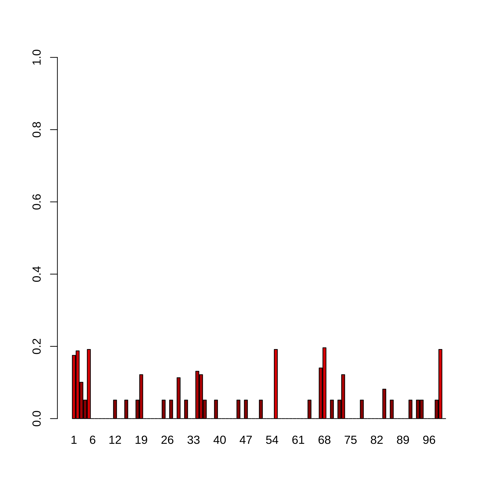
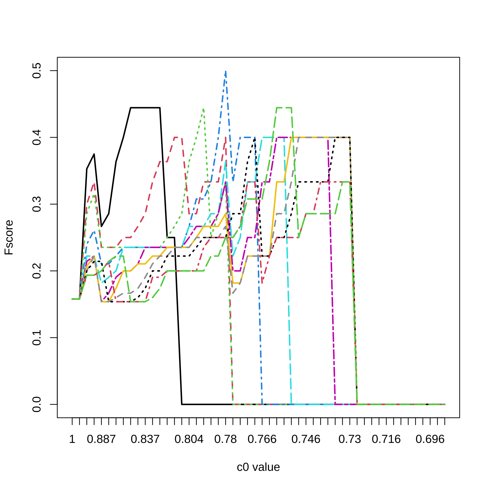

With the growth of big data, variable selection has become one of the major challenges in statistics. Although many methods have been proposed in the literature their performance in terms of recall and precision are limited in a context where the number of variables by far exceeds the number of observations or in a high correlated setting. Results: This package implements a new general algorithm which improves the precision of any existing variable selection method. This algorithm is based on highly intensive simulations and takes into account the correlation structure of the data. Our algorithm can either produce a confidence index for variable selection or it can be used in an experimental design planning perspective.
This website and these examples were created by F. Bertrand and M. Maumy-Bertrand.
Installation
You can install the released version of SelectBoost from CRAN with:
install.packages("SelectBoost")You can install the development version of SelectBoost from github with:
devtools::install_github("fbertran/SelectBoost")Examples
First example: Simulated dataset
Simulating data
Create a correlation matrix for two groups of variable with an intragroup correlation value of \(cor_group\).
library(SelectBoost)
group<-c(rep(1:2,5))
cor_group<-c(.8,.4)
C<-simulation_cor(group,cor_group)
C
#> [,1] [,2] [,3] [,4] [,5] [,6] [,7] [,8] [,9] [,10]
#> [1,] 1.0 0.0 0.8 0.0 0.8 0.0 0.8 0.0 0.8 0.0
#> [2,] 0.0 1.0 0.0 0.4 0.0 0.4 0.0 0.4 0.0 0.4
#> [3,] 0.8 0.0 1.0 0.0 0.8 0.0 0.8 0.0 0.8 0.0
#> [4,] 0.0 0.4 0.0 1.0 0.0 0.4 0.0 0.4 0.0 0.4
#> [5,] 0.8 0.0 0.8 0.0 1.0 0.0 0.8 0.0 0.8 0.0
#> [6,] 0.0 0.4 0.0 0.4 0.0 1.0 0.0 0.4 0.0 0.4
#> [7,] 0.8 0.0 0.8 0.0 0.8 0.0 1.0 0.0 0.8 0.0
#> [8,] 0.0 0.4 0.0 0.4 0.0 0.4 0.0 1.0 0.0 0.4
#> [9,] 0.8 0.0 0.8 0.0 0.8 0.0 0.8 0.0 1.0 0.0
#> [10,] 0.0 0.4 0.0 0.4 0.0 0.4 0.0 0.4 0.0 1.0Simulate predictor dataset witn \(N=100\) observations.
N<-100
X<-simulation_X(N,C)
head(X)
#> [,1] [,2] [,3] [,4] [,5] [,6]
#> [1,] -2.1389293 -0.4795849 -2.4238525 -0.1618619 -2.1561277 1.24210620
#> [2,] -0.1499718 -0.2546898 -0.2139475 -0.7987808 -0.4491133 -1.04956577
#> [3,] 1.0832127 1.2487369 1.8403812 2.3587838 0.8830765 2.45815062
#> [4,] -1.2810501 -0.8054661 -1.5085212 -0.4736204 -1.8155208 1.17666102
#> [5,] -0.1954987 -0.4765827 0.3022279 1.0302858 0.3156156 0.27412732
#> [6,] 1.7082977 -0.3955005 1.2025657 -0.7819241 1.3940482 -0.02402946
#> [,7] [,8] [,9] [,10]
#> [1,] -2.6677175 -0.61344943 -2.4077419 0.19520722
#> [2,] -1.2962124 -0.75344341 -0.1290267 0.67774095
#> [3,] 2.2878161 1.43736091 2.1945553 0.26334198
#> [4,] -1.2415343 0.46282968 -1.5151554 -0.01812737
#> [5,] 0.4642094 0.71326657 0.3203293 -1.33542033
#> [6,] 0.7587710 0.04504033 0.4335542 -1.09543507\(supp\) set the predictors that will be used to simulate the response (=true predictors). \(minB\) and \(maxB\) set the minimum and maximum absolute value for a \(\beta\) coefficient used in the model for the (true) predictors. \(stn\) is a scaling factor for the noise in the response.
supp<-c(1,1,1,0,0,0,0,0,0,0)
minB<-1
maxB<-2
stn<-5
DATA_exemple<-simulation_DATA(X,supp,minB,maxB,stn)
str(DATA_exemple)
#> List of 6
#> $ X : num [1:100, 1:10] -2.139 -0.15 1.083 -1.281 -0.195 ...
#> $ Y : num [1:100] 9.136 0.502 -7.377 3.967 1.254 ...
#> $ support: num [1:10] 1 1 1 0 0 0 0 0 0 0
#> $ beta : num [1:10] -1.08 -1.26 -1.8 0 0 ...
#> $ stn : num 5
#> $ sigma : num [1, 1] 1.37
#> - attr(*, "class")= chr "simuls"Selectboost analysis
By default \(fastboost\) performs \(B=100\) resamplings of the model. As a result, we get a matrix with the proportions of selection of each variable at a given resampling level \(c_0\). The resampling are designed to take into account the correlation structure of the predictors. The correlation used by default is the Pearson Correlation but any can be passed through the \(corrfunc\) argument. The \(c_0\) value sets the minimum level for which correlations between two predictors are kept in the resampling process. The correlation structure is used to group the variables. Two groups functions \(group\_func\_1\), grouping by thresholding the correlation matrix, and \(group\_func\_2\), grouping using community selection, are available but any can be provided using the \(group\) argument of the function. The \(func\) argument is the variable selection function that should be used to assess variable memberships. It defaults to \(lasso\_msgps\_AICc\) but many others, for instance for lasso, elastinet, logistic glmnet and network inference with the Cascade package, are provided:
- lasso_cv_glmnet_bin_min(X, Y)
- lasso_cv_glmnet_bin_1se(X, Y)
- lasso_glmnet_bin_AICc(X, Y)
- lasso_glmnet_bin_BIC(X, Y)
- lasso_cv_lars_min(X, Y)
- lasso_cv_lars_1se(X, Y)
- lasso_cv_glmnet_min(X, Y)
- lasso_cv_glmnet_min_weighted(X, Y, priors)
- lasso_cv_glmnet_1se(X, Y)
- lasso_cv_glmnet_1se_weighted(X, Y, priors)
- lasso_msgps_Cp(X, Y, penalty = “enet”)
- lasso_msgps_AICc(X, Y, penalty = “enet”)
- lasso_msgps_GCV(X, Y, penalty = “enet”)
- lasso_msgps_BIC(X, Y, penalty = “enet”)
- enetf_msgps_Cp(X, Y, penalty = “enet”, alpha = 0.5)
- enetf_msgps_AICc(X, Y, penalty = “enet”, alpha = 0.5)
- enetf_msgps_GCV(X, Y, penalty = “enet”, alpha = 0.5)
- enetf_msgps_BIC(X, Y, penalty = “enet”, alpha = 0.5)
- lasso_cascade(M, Y, K, eps = 10^-5, cv.fun)
User defined functions can alse be specified in the \(func\) argument. See the vignette for an example of use with adaptative lasso.
Default steps for \(c_0\)
quantile(abs(cor(DATA_exemple$X))[abs(cor(DATA_exemple$X))!=1],(0:10)/10)
#> 0% 10% 20% 30% 40%
#> 0.0005766644 0.0231468861 0.0584710028 0.0803324188 0.1407169772
#> 50% 60% 70% 80% 90%
#> 0.2115891273 0.2753443468 0.4263685785 0.7706820496 0.8195254424
#> 100%
#> 0.8463743391result.boost = fastboost(DATA_exemple$X, DATA_exemple$Y)
result.boost
#> 1 2 3 4 5 6 7 8 9 10
#> c0 = 1 1.00 1.00 1.00 1.00 1.00 0.00 1.00 1.00 0.00 1.00
#> c0 = 0.846 1.00 1.00 1.00 1.00 1.00 0.00 0.63 1.00 0.44 1.00
#> c0 = 0.819 0.99 1.00 1.00 0.66 0.29 0.77 0.98 0.48 0.66 0.55
#> c0 = 0.771 0.91 1.00 0.86 0.62 0.96 0.80 0.99 0.34 0.85 0.36
#> c0 = 0.425 0.92 1.00 0.92 0.59 0.77 0.25 0.88 0.51 0.99 0.47
#> c0 = 0.275 0.98 0.81 0.93 0.54 0.80 0.48 0.92 0.85 0.76 0.89
#> c0 = 0.212 0.86 0.72 0.80 0.55 0.97 0.79 1.00 0.70 0.84 0.67
#> c0 = 0.141 0.82 0.62 0.89 0.70 1.00 0.84 0.80 0.66 0.72 0.55
#> c0 = 0.081 0.99 0.52 0.93 0.77 0.96 0.88 0.90 0.64 0.94 0.22
#> c0 = 0.058 0.96 0.37 0.96 0.86 0.90 0.88 0.90 0.81 0.80 0.41
#> c0 = 0.027 0.98 0.53 0.97 0.83 0.90 0.86 0.87 0.79 0.78 0.41
#> c0 = 0.001 0.88 0.69 0.93 0.83 0.92 0.86 0.86 0.89 0.84 0.64
#> c0 = 0 0.90 0.93 0.93 0.86 0.83 0.87 0.86 0.92 0.86 0.91
#> attr(,"c0.seq")
#> 100% 90% 80% 70% 60% 50% 40%
#> 1.000000 0.846374 0.818999 0.770682 0.425437 0.275344 0.211589 0.140717
#> 30% 20% 10% 0%
#> 0.080727 0.058471 0.026877 0.000577 0.000000
#> attr(,"steps.seq")
#> [1] 1.0 0.9 0.8 0.7 0.6 0.5 0.4 0.3 0.2 0.1 0.0
#> attr(,"typeboost")
#> [1] "fastboost"
#> attr(,"limi_alea")
#> [1] NA
#> attr(,"B")
#> [1] 100
#> attr(,"class")
#> [1] "selectboost"Comparing true and selected predictors
We can compute, for all the \(c_0\) values and for a selection threshold varying from \(1\) to \(0.5\) by \(0.05\) steps, the sensitivity (precision), the specificity (recall), as well as several Fscores (\(F_1\) harmonic mean of precision and recall, \(F_{1/2}\) and \(F_2\) two weighted harmonic means of precision and recall).
All_res=NULL
#Here are the cutoff level tested
for(lev in 20:10/20){
F_score=NULL
for(u in 1:nrow(result.boost)){
F_score<-rbind(F_score,SelectBoost::compare(DATA_exemple,result.boost[u,],
level=lev)[1:5])
}
All_res <- abind::abind(All_res,F_score,along=3)
}For a selection threshold equal to \(0.90\), all the c0 values and the 5 criteria.
matplot(1:nrow(result.boost),All_res[,,3],type="l",ylab="criterion value",
xlab="c0 value",xaxt="n",lwd=2)
axis(1, at=1:length(attr(result.boost,"c0.seq")),
labels=round(attr(result.boost,"c0.seq"),3))
legend(x="topright",legend=c("sensitivity (precision)",
"specificity (recall)","non-weighted Fscore",
"F1/2 weighted Fscore","F2 weighted Fscore"),lty=1:5,col=1:5,lwd=2)
Fscores for all selection thresholds and all the c0 values.
matplot(1:nrow(result.boost),All_res[,3,],type="l",ylab="Fscore",
xlab="c0 value",xaxt="n",lwd=2,col=1:11,lty=1:11)
axis(1, at=1:length(attr(result.boost,"c0.seq")),
labels=round(attr(result.boost,"c0.seq"),3))
legend(x="topright",legend=(20:11)/20,lty=1:11,col=1:11,lwd=2,
title="Threshold")
Complete Selectboost analysis
What is the maximum number of steps ?
With such datasets, we can perform all the 45 steps for the Selectboost analysis. We switch to community analysis from the igraph package as the grouping variable function.
groups.seq.f2=lapply(sort(unique(c(1,all.cors,0)),decreasing=TRUE), function(c0)
if(c0!=1){lapply(group_func_2(cor(DATA_exemple$X),c0)$communities,sort)}
else {lapply(group_func_2(cor(DATA_exemple$X),c0),sort)})
names(groups.seq.f2)<-sort(unique(c(1,all.cors,0)),decreasing=TRUE)
groups.seq.f2[[1]]
#> [[1]]
#> [1] 1
#>
#> [[2]]
#> [1] 2
#>
#> [[3]]
#> [1] 3
#>
#> [[4]]
#> [1] 4
#>
#> [[5]]
#> [1] 5
#>
#> [[6]]
#> [1] 6
#>
#> [[7]]
#> [1] 7
#>
#> [[8]]
#> [1] 8
#>
#> [[9]]
#> [1] 9
#>
#> [[10]]
#> [1] 10result.boost.45 = fastboost(DATA_exemple$X, DATA_exemple$Y, B=100,
steps.seq=sort(unique(all.cors),decreasing=TRUE))
result.boost.45
#> 1 2 3 4 5 6 7 8 9 10
#> c0 = 1 1.00 1.00 1.00 1.00 1.00 0.00 1.00 1.00 0.00 1.00
#> c0 = 0.846 1.00 1.00 1.00 1.00 1.00 0.00 0.65 1.00 0.43 1.00
#> c0 = 0.831 1.00 1.00 1.00 1.00 1.00 0.00 0.64 1.00 0.44 1.00
#> c0 = 0.831 0.91 1.00 1.00 0.73 0.55 0.92 1.00 0.48 0.31 0.55
#> c0 = 0.827 0.67 1.00 1.00 0.80 0.44 0.85 1.00 0.49 0.73 0.55
#> c0 = 0.82 0.97 1.00 1.00 0.67 0.30 0.79 1.00 0.49 0.63 0.54
#> c0 = 0.818 0.99 1.00 1.00 0.77 0.28 0.60 1.00 0.48 0.99 0.52
#> c0 = 0.815 0.91 1.00 1.00 0.73 0.75 0.80 0.93 0.41 0.98 0.44
#> c0 = 0.798 0.87 1.00 0.80 0.69 0.99 0.79 0.90 0.41 0.97 0.38
#> c0 = 0.771 0.90 1.00 0.84 0.66 0.96 0.80 0.98 0.34 0.83 0.40
#> c0 = 0.771 0.92 1.00 0.91 0.58 0.95 0.80 0.84 0.25 0.92 0.37
#> c0 = 0.535 0.92 1.00 0.90 0.54 0.95 0.80 0.85 0.29 0.92 0.34
#> c0 = 0.501 0.88 1.00 0.99 0.56 0.99 0.92 0.87 0.26 0.96 0.47
#> c0 = 0.431 0.97 1.00 0.92 0.42 0.86 0.90 0.93 0.29 0.91 0.51
#> c0 = 0.426 0.91 1.00 0.92 0.72 0.92 0.88 0.99 0.36 0.91 0.68
#> c0 = 0.422 0.93 1.00 0.90 0.57 0.80 0.45 0.91 0.63 0.97 0.50
#> c0 = 0.397 0.90 0.92 0.90 0.66 0.79 0.40 0.89 0.84 0.96 0.29
#> c0 = 0.39 0.90 0.80 0.94 0.60 0.77 0.41 0.91 0.89 0.97 0.88
#> c0 = 0.295 0.90 0.79 0.91 0.62 0.79 0.42 0.89 0.92 0.98 0.88
#> c0 = 0.262 0.98 0.82 0.95 0.64 0.84 0.52 0.93 0.74 0.74 0.82
#> c0 = 0.247 0.99 0.79 0.95 0.68 0.80 0.51 0.92 0.75 0.72 0.84
#> c0 = 0.245 0.97 0.73 0.76 0.56 0.89 0.85 0.95 0.71 0.77 0.85
#> c0 = 0.239 0.87 0.70 0.80 0.54 0.99 0.87 0.99 0.68 0.85 0.82
#> c0 = 0.212 0.85 0.74 0.78 0.54 0.97 0.81 1.00 0.71 0.81 0.67
#> c0 = 0.199 0.85 0.73 0.82 0.59 0.98 0.81 1.00 0.72 0.83 0.67
#> c0 = 0.198 0.91 0.65 0.85 0.58 1.00 0.88 0.86 0.66 0.70 0.59
#> c0 = 0.164 0.93 0.65 0.85 0.59 1.00 0.85 0.90 0.69 0.71 0.57
#> c0 = 0.146 0.93 0.64 0.88 0.64 1.00 0.82 0.80 0.66 0.70 0.58
#> c0 = 0.133 0.93 0.58 0.95 0.71 0.99 0.88 0.91 0.60 0.90 0.37
#> c0 = 0.113 0.94 0.47 0.90 0.76 1.00 0.88 0.96 0.52 0.91 0.35
#> c0 = 0.087 0.95 0.53 0.86 0.80 1.00 0.89 0.94 0.52 0.93 0.35
#> c0 = 0.082 0.93 0.47 0.86 0.75 1.00 0.86 0.87 0.67 0.92 0.29
#> c0 = 0.08 0.90 0.44 0.93 0.76 0.97 0.83 0.89 0.66 0.99 0.27
#> c0 = 0.074 0.89 0.46 0.94 0.80 0.94 0.86 0.91 0.66 0.98 0.26
#> c0 = 0.067 0.88 0.45 0.94 0.78 0.99 0.88 0.90 0.71 0.88 0.28
#> c0 = 0.067 0.91 0.43 0.96 0.76 0.99 0.88 0.91 0.74 0.82 0.37
#> c0 = 0.06 0.91 0.44 0.96 0.78 0.99 0.87 0.90 0.71 0.78 0.38
#> c0 = 0.052 0.91 0.39 0.96 0.80 0.90 0.90 0.93 0.80 0.81 0.39
#> c0 = 0.043 0.94 0.40 0.96 0.82 0.87 0.85 0.92 0.81 0.85 0.40
#> c0 = 0.033 0.96 0.40 0.97 0.85 0.92 0.87 0.89 0.78 0.80 0.39
#> c0 = 0.032 0.94 0.41 0.96 0.86 0.90 0.88 0.83 0.82 0.81 0.45
#> c0 = 0.023 0.97 0.53 0.96 0.84 0.90 0.86 0.81 0.77 0.81 0.43
#> c0 = 0.023 0.95 0.58 0.97 0.80 0.89 0.86 0.85 0.75 0.80 0.41
#> c0 = 0.016 0.98 0.70 0.92 0.84 0.93 0.86 0.85 0.91 0.82 0.38
#> c0 = 0.016 0.88 0.68 0.93 0.87 0.99 0.84 0.86 0.90 0.83 0.69
#> c0 = 0.001 0.84 0.67 0.93 0.83 0.95 0.87 0.89 0.89 0.85 0.64
#> c0 = 0 0.87 0.94 0.91 0.88 0.83 0.83 0.89 0.91 0.86 0.92
#> attr(,"c0.seq")
#> [1] 1.000000 0.846374 0.831294 0.830841 0.826663 0.819525 0.818210
#> [8] 0.814741 0.797922 0.771152 0.770564 0.534572 0.501209 0.431046
#> [15] 0.426369 0.421711 0.396605 0.389744 0.294614 0.262498 0.246502
#> [22] 0.245399 0.238623 0.211589 0.199314 0.197514 0.164357 0.145983
#> [29] 0.132818 0.112724 0.086847 0.082305 0.080332 0.073625 0.067300
#> [36] 0.067243 0.060012 0.052309 0.042618 0.033210 0.032473 0.023147
#> [43] 0.022942 0.016455 0.016314 0.000577 0.000000
#> attr(,"steps.seq")
#> [1] 0.0000000000 0.8463743391 0.8312936335 0.8308414154 0.8266630136
#> [6] 0.8195254424 0.8182102700 0.8147410818 0.7979224239 0.7711522816
#> [11] 0.7705644916 0.5345716968 0.5012088635 0.4310456760 0.4263685785
#> [16] 0.4217112797 0.3966051093 0.3897444674 0.2946136835 0.2624981223
#> [21] 0.2465015069 0.2453992742 0.2386233319 0.2115891273 0.1993138583
#> [26] 0.1975141251 0.1643568781 0.1459828302 0.1328181977 0.1127243594
#> [31] 0.0868466251 0.0823049847 0.0803324188 0.0736245851 0.0672999345
#> [36] 0.0672434255 0.0600116127 0.0523085633 0.0426184969 0.0332099270
#> [41] 0.0324725692 0.0231468861 0.0229416844 0.0164552220 0.0163141256
#> [46] 0.0005766644 1.0000000000
#> attr(,"typeboost")
#> [1] "fastboost"
#> attr(,"limi_alea")
#> [1] NA
#> attr(,"B")
#> [1] 100
#> attr(,"class")
#> [1] "selectboost"Comparing true and selected predictors
Due to the effect of the correlated resampling, the proportion of selection for a variable may increase, especially if it is a variable that is often discarded. Hence, one should force those proportions of selection to be non-increasing. It is one of the results of the \(summary\) function for the \(selectboost\) class.
dec.result.boost.45 <- summary(result.boost.45)$selectboost_result.dec
dec.result.boost.45
#> 1 2 3 4 5 6 7 8 9 10
#> 1.00 1.00 1.00 1.00 1.00 0 1.00 1.00 0 1.00
#> c0 = 0.846 1.00 1.00 1.00 1.00 1.00 0 0.64 1.00 0 1.00
#> c0 = 0.831 1.00 1.00 1.00 1.00 1.00 0 0.64 1.00 0 1.00
#> c0 = 0.831 0.91 1.00 1.00 0.77 0.60 0 0.64 0.51 0 0.55
#> c0 = 0.827 0.68 1.00 1.00 0.77 0.44 0 0.64 0.48 0 0.55
#> c0 = 0.82 0.68 1.00 1.00 0.65 0.27 0 0.61 0.48 0 0.51
#> c0 = 0.818 0.68 1.00 1.00 0.65 0.27 0 0.61 0.48 0 0.51
#> c0 = 0.815 0.60 1.00 1.00 0.60 0.27 0 0.50 0.39 0 0.43
#> c0 = 0.798 0.57 1.00 0.78 0.58 0.27 0 0.50 0.39 0 0.38
#> c0 = 0.771 0.57 1.00 0.78 0.57 0.23 0 0.50 0.33 0 0.37
#> c0 = 0.771 0.57 1.00 0.78 0.47 0.21 0 0.35 0.27 0 0.36
#> c0 = 0.535 0.57 1.00 0.76 0.47 0.21 0 0.33 0.27 0 0.33
#> c0 = 0.501 0.51 1.00 0.76 0.47 0.21 0 0.33 0.22 0 0.33
#> c0 = 0.431 0.51 1.00 0.68 0.31 0.08 0 0.33 0.22 0 0.33
#> c0 = 0.426 0.46 1.00 0.68 0.31 0.08 0 0.33 0.22 0 0.33
#> c0 = 0.422 0.46 1.00 0.67 0.18 0.00 0 0.22 0.22 0 0.14
#> c0 = 0.397 0.46 0.90 0.61 0.18 0.00 0 0.22 0.22 0 0.00
#> c0 = 0.39 0.46 0.78 0.61 0.12 0.00 0 0.22 0.22 0 0.00
#> c0 = 0.295 0.44 0.78 0.61 0.12 0.00 0 0.22 0.20 0 0.00
#> c0 = 0.262 0.44 0.78 0.61 0.12 0.00 0 0.22 0.04 0 0.00
#> c0 = 0.247 0.44 0.75 0.60 0.12 0.00 0 0.22 0.04 0 0.00
#> c0 = 0.245 0.40 0.65 0.41 0.03 0.00 0 0.22 0.02 0 0.00
#> c0 = 0.239 0.31 0.65 0.41 0.01 0.00 0 0.22 0.00 0 0.00
#> c0 = 0.212 0.30 0.63 0.41 0.01 0.00 0 0.22 0.00 0 0.00
#> c0 = 0.199 0.30 0.63 0.40 0.00 0.00 0 0.22 0.00 0 0.00
#> c0 = 0.198 0.30 0.56 0.40 0.00 0.00 0 0.17 0.00 0 0.00
#> c0 = 0.164 0.30 0.56 0.40 0.00 0.00 0 0.13 0.00 0 0.00
#> c0 = 0.146 0.30 0.50 0.40 0.00 0.00 0 0.00 0.00 0 0.00
#> c0 = 0.133 0.23 0.49 0.40 0.00 0.00 0 0.00 0.00 0 0.00
#> c0 = 0.113 0.23 0.40 0.29 0.00 0.00 0 0.00 0.00 0 0.00
#> c0 = 0.087 0.21 0.40 0.29 0.00 0.00 0 0.00 0.00 0 0.00
#> c0 = 0.082 0.21 0.28 0.26 0.00 0.00 0 0.00 0.00 0 0.00
#> c0 = 0.08 0.18 0.28 0.26 0.00 0.00 0 0.00 0.00 0 0.00
#> c0 = 0.074 0.12 0.28 0.26 0.00 0.00 0 0.00 0.00 0 0.00
#> c0 = 0.067 0.12 0.25 0.26 0.00 0.00 0 0.00 0.00 0 0.00
#> c0 = 0.067 0.10 0.25 0.26 0.00 0.00 0 0.00 0.00 0 0.00
#> c0 = 0.06 0.10 0.24 0.26 0.00 0.00 0 0.00 0.00 0 0.00
#> c0 = 0.052 0.10 0.16 0.26 0.00 0.00 0 0.00 0.00 0 0.00
#> c0 = 0.043 0.10 0.16 0.24 0.00 0.00 0 0.00 0.00 0 0.00
#> c0 = 0.033 0.07 0.14 0.24 0.00 0.00 0 0.00 0.00 0 0.00
#> c0 = 0.032 0.07 0.14 0.24 0.00 0.00 0 0.00 0.00 0 0.00
#> c0 = 0.023 0.07 0.14 0.24 0.00 0.00 0 0.00 0.00 0 0.00
#> c0 = 0.023 0.06 0.14 0.23 0.00 0.00 0 0.00 0.00 0 0.00
#> c0 = 0.016 0.03 0.14 0.19 0.00 0.00 0 0.00 0.00 0 0.00
#> c0 = 0.016 0.00 0.14 0.18 0.00 0.00 0 0.00 0.00 0 0.00
#> c0 = 0.001 0.00 0.14 0.18 0.00 0.00 0 0.00 0.00 0 0.00
#> c0 = 0 0.00 0.14 0.16 0.00 0.00 0 0.00 0.00 0 0.00Let’s compute again, for all the \(c_0\) values, the sensitivity (precision), specificity (recall), and several Fscores (\(F_1\) harmonic mean of precision and recall, \(F_{1/2}\) and \(F_2\) two weighted harmonic means of precision and recall).
All_res.45=NULL
#Here are the cutoff level tested
for(lev.45 in 20:10/20){
F_score.45=NULL
for(u.45 in 1:nrow(dec.result.boost.45
)){
F_score.45<-rbind(F_score.45,SelectBoost::compare(DATA_exemple,
dec.result.boost.45[u.45,],level=lev.45)[1:5])
}
All_res.45 <- abind::abind(All_res.45,F_score.45,along=3)
}For a selection threshold equal to \(0.90\), all the c0 values and the 5 criteria.
matplot(1:nrow(dec.result.boost.45),All_res.45[,,3],type="l",
ylab="criterion value",xlab="c0 value",xaxt="n",lwd=2)
axis(1, at=1:length(attr(result.boost.45,"c0.seq")),
labels=round(attr(result.boost.45,"c0.seq"),3))
legend(x="topright",legend=c("sensitivity (precision)",
"specificity (recall)","non-weighted Fscore",
"F1/2 weighted Fscore","F2 weighted Fscore"),
lty=1:5,col=1:5,lwd=2)Fscores for all selection thresholds and all the c0 values.
matplot(1:nrow(dec.result.boost.45),All_res.45[,3,],type="l",
ylab="Fscore",xlab="c0 value",xaxt="n",lwd=2,col=1:11,lty=1:11)
axis(1, at=1:length(attr(result.boost.45,"c0.seq")),
labels=round(attr(result.boost.45,"c0.seq"),3))
legend(x="topright",legend=(20:11)/20,lty=1:11,col=1:11,lwd=2,
title="Threshold")Confidence indices.
First compute the highest c0 value for which the proportion of selection is under the threshold \(thr\). In that analysis, we set \(thr=1\).
thr=1
index.last.c0=apply(dec.result.boost.45>=thr,2,which.min)-1
index.last.c0
#> 1 2 3 4 5 6 7 8 9 10
#> 3 16 8 3 3 0 1 3 0 3Define some colorRamp ranging from blue (high confidence) to red (low confidence).
rownames(dec.result.boost.45)[index.last.c0]
#> [1] "c0 = 0.831" "c0 = 0.422" "c0 = 0.815" "c0 = 0.831" "c0 = 0.831"
#> [6] "" "c0 = 0.831" "c0 = 0.831"
attr(result.boost.45,"c0.seq")[index.last.c0]
#> [1] 0.831294 0.421711 0.814741 0.831294 0.831294 1.000000 0.831294 0.831294
confidence.indices = c(0,1-attr(result.boost.45,"c0.seq"))[index.last.c0+1]
confidence.indices
#> [1] 0.168706 0.578289 0.185259 0.168706 0.168706 0.000000 0.000000
#> [8] 0.168706 0.000000 0.168706
barplot(confidence.indices,col=rgb(jet.colors(confidence.indices), maxColorValue = 255),
names.arg=colnames(result.boost.45), ylim=c(0,1))Second example: biological network data
Simulating data using real data
The loop should be used to generate at least 100 datasets and then average the results.
require(CascadeData)
#> Loading required package: CascadeData
data(micro_S)
data(micro_US)
micro_US<-Cascade::as.micro_array(micro_US,c(60,90,240,390),6)
micro_S<-Cascade::as.micro_array(micro_S,c(60,90,240,390),6)
S<-Cascade::geneSelection(list(micro_S,micro_US),list("condition",c(1,2),1),-1)
#> Loading required package: limma
data(micro_S)
Sel<-micro_S[S@name,]
set.seed(3141)
for(i in 1:1){
X<-t(as.matrix(Sel[sample(1:1300 ,100),]))
X2<-t(t(X)/sqrt(diag(t(X)%*%X)))
#SSS<-cor(X2)
#SS<-abs(SSS[row(SSS)>col(SSS)])
#mean(SS)
X<-X2
supp<-c(1,1,1,1,1,rep(0,95))
minB<-1
maxB<-2
stn<-5
assign(paste("DATA_exemple3_nb_",i,sep=""),simulation_DATA(X,supp,1,2,stn))
}all.cors.micro=unique(abs(cor(DATA_exemple3_nb_1$X))[abs(cor(
DATA_exemple3_nb_1$X))!=1])
length(unique(all.cors.micro))
#> [1] 4950
quantile(all.cors.micro,.90)
#> 90%
#> 0.5946165top10p.all.cors.micro=all.cors.micro[all.cors.micro>=quantile(all.cors.micro,.90)]
c0seq.top10p.all.cors.micro=quantile(top10p.all.cors.micro,rev(
seq(0,length(top10p.all.cors.micro),length.out = 50)/495))
c0seq.top10p.all.cors.micro
#> 100% 97.95918% 95.91837% 93.87755% 91.83673% 89.79592% 87.7551%
#> 0.9324777 0.8817000 0.8516759 0.8322181 0.8176826 0.8037348 0.7974261
#> 85.71429% 83.67347% 81.63265% 79.59184% 77.55102% 75.5102% 73.46939%
#> 0.7845523 0.7773261 0.7637356 0.7560691 0.7492756 0.7429626 0.7354952
#> 71.42857% 69.38776% 67.34694% 65.30612% 63.26531% 61.22449% 59.18367%
#> 0.7291972 0.7261506 0.7216514 0.7163867 0.7110924 0.7063313 0.6996139
#> 57.14286% 55.10204% 53.06122% 51.02041% 48.97959% 46.93878% 44.89796%
#> 0.6938668 0.6895966 0.6849656 0.6811116 0.6792702 0.6753463 0.6714343
#> 42.85714% 40.81633% 38.77551% 36.73469% 34.69388% 32.65306% 30.61224%
#> 0.6680970 0.6640128 0.6590942 0.6549434 0.6512180 0.6476016 0.6458247
#> 28.57143% 26.53061% 24.4898% 22.44898% 20.40816% 18.36735% 16.32653%
#> 0.6415746 0.6388103 0.6360603 0.6309453 0.6290600 0.6249131 0.6219063
#> 14.28571% 12.2449% 10.20408% 8.163265% 6.122449% 4.081633% 2.040816%
#> 0.6184595 0.6155353 0.6134627 0.6098312 0.6052737 0.6019864 0.5998630
#> 0%
#> 0.5947247result.boost.micro_nb1 = fastboost(DATA_exemple3_nb_1$X, DATA_exemple3_nb_1$Y, B=100, steps.seq=c0seq.top10p.all.cors.micro)
result.boost.micro_nb1
#> 1 2 3 4 5 6 7 8 9 10 11 12
#> c0 = 1 1.00 1.00 1.00 1.00 1.00 1.00 1.00 0.00 0.00 0.00 0.00 0.00
#> c0 = 0.932 1.00 1.00 1.00 1.00 1.00 1.00 1.00 0.00 0.00 0.00 0.00 0.00
#> c0 = 0.882 0.34 1.00 0.92 0.88 0.75 0.75 0.57 0.33 0.23 0.10 0.00 0.30
#> c0 = 0.852 0.76 1.00 0.47 0.51 0.86 0.76 0.56 0.05 0.23 0.24 0.00 0.24
#> c0 = 0.832 0.45 1.00 0.43 0.62 0.73 0.65 0.56 0.24 0.34 0.11 0.00 0.35
#> c0 = 0.818 0.54 1.00 0.51 0.24 0.75 0.62 0.43 0.14 0.29 0.23 0.05 0.50
#> c0 = 0.804 0.51 1.00 0.66 0.49 0.62 0.66 0.45 0.19 0.22 0.15 0.33 0.57
#> c0 = 0.797 0.47 1.00 0.32 0.38 0.85 0.58 0.47 0.15 0.28 0.32 0.33 0.41
#> c0 = 0.785 0.51 1.00 0.37 0.39 0.78 0.40 0.35 0.25 0.20 0.17 0.20 0.29
#> c0 = 0.777 0.51 1.00 0.18 0.31 0.71 0.60 0.32 0.12 0.34 0.17 0.07 0.38
#> c0 = 0.764 0.41 1.00 0.35 0.31 0.44 0.39 0.40 0.19 0.21 0.28 0.20 0.30
#> c0 = 0.756 0.31 1.00 0.28 0.38 0.44 0.32 0.38 0.20 0.15 0.12 0.37 0.38
#> c0 = 0.749 0.49 1.00 0.30 0.38 0.35 0.55 0.36 0.19 0.27 0.39 0.36 0.42
#> c0 = 0.743 0.33 1.00 0.35 0.42 0.22 0.41 0.43 0.32 0.19 0.32 0.29 0.21
#> c0 = 0.735 0.38 1.00 0.34 0.45 0.55 0.37 0.52 0.44 0.22 0.29 0.26 0.25
#> c0 = 0.729 0.41 1.00 0.24 0.40 0.33 0.32 0.37 0.19 0.19 0.40 0.26 0.28
#> c0 = 0.726 0.38 1.00 0.37 0.41 0.34 0.31 0.56 0.33 0.13 0.52 0.24 0.16
#> c0 = 0.722 0.43 1.00 0.16 0.47 0.54 0.45 0.46 0.31 0.26 0.40 0.48 0.34
#> c0 = 0.716 0.21 1.00 0.09 0.39 0.18 0.40 0.33 0.37 0.31 0.37 0.50 0.23
#> c0 = 0.711 0.32 1.00 0.09 0.54 0.25 0.14 0.41 0.33 0.21 0.32 0.28 0.32
#> c0 = 0.706 0.34 1.00 0.41 0.52 0.23 0.27 0.49 0.36 0.19 0.38 0.38 0.24
#> c0 = 0.7 0.22 1.00 0.40 0.41 0.46 0.47 0.39 0.27 0.14 0.32 0.27 0.21
#> c0 = 0.694 0.27 1.00 0.26 0.34 0.22 0.27 0.51 0.39 0.27 0.42 0.32 0.24
#> c0 = 0.69 0.47 1.00 0.29 0.24 0.32 0.25 0.23 0.28 0.29 0.32 0.34 0.46
#> c0 = 0.685 0.52 1.00 0.28 0.40 0.31 0.22 0.24 0.31 0.35 0.42 0.23 0.39
#> c0 = 0.681 0.46 1.00 0.19 0.35 0.09 0.36 0.34 0.26 0.23 0.31 0.23 0.34
#> c0 = 0.679 0.25 1.00 0.21 0.44 0.18 0.47 0.44 0.22 0.24 0.49 0.31 0.33
#> c0 = 0.675 0.39 1.00 0.37 0.22 0.31 0.47 0.36 0.32 0.23 0.28 0.33 0.32
#> c0 = 0.671 0.48 1.00 0.43 0.31 0.38 0.51 0.33 0.25 0.27 0.32 0.31 0.34
#> c0 = 0.668 0.40 1.00 0.40 0.33 0.35 0.48 0.33 0.21 0.27 0.29 0.26 0.36
#> c0 = 0.664 0.33 1.00 0.27 0.33 0.30 0.40 0.42 0.44 0.29 0.30 0.35 0.37
#> c0 = 0.659 0.28 1.00 0.29 0.46 0.33 0.40 0.44 0.48 0.20 0.24 0.39 0.22
#> c0 = 0.655 0.29 1.00 0.45 0.47 0.31 0.37 0.43 0.59 0.20 0.22 0.41 0.30
#> c0 = 0.651 0.32 1.00 0.47 0.50 0.32 0.33 0.38 0.59 0.26 0.31 0.40 0.38
#> c0 = 0.648 0.31 1.00 0.49 0.43 0.34 0.32 0.39 0.59 0.19 0.20 0.40 0.39
#> c0 = 0.646 0.46 1.00 0.48 0.31 0.43 0.36 0.23 0.65 0.39 0.31 0.30 0.34
#> c0 = 0.642 0.51 1.00 0.61 0.45 0.27 0.36 0.35 0.38 0.29 0.42 0.37 0.46
#> c0 = 0.639 0.49 1.00 0.62 0.45 0.28 0.32 0.35 0.44 0.37 0.44 0.36 0.44
#> c0 = 0.636 0.48 1.00 0.60 0.41 0.26 0.33 0.36 0.39 0.36 0.40 0.41 0.43
#> c0 = 0.631 0.51 1.00 0.59 0.45 0.27 0.41 0.31 0.45 0.40 0.43 0.36 0.46
#> c0 = 0.629 0.42 1.00 0.60 0.43 0.29 0.42 0.34 0.43 0.31 0.40 0.34 0.50
#> c0 = 0.625 0.44 1.00 0.62 0.37 0.23 0.38 0.35 0.38 0.39 0.44 0.34 0.46
#> c0 = 0.622 0.34 1.00 0.59 0.38 0.31 0.40 0.36 0.50 0.47 0.55 0.22 0.43
#> c0 = 0.618 0.33 1.00 0.60 0.38 0.33 0.35 0.34 0.44 0.43 0.51 0.27 0.38
#> c0 = 0.616 0.35 1.00 0.59 0.37 0.36 0.37 0.33 0.48 0.38 0.53 0.27 0.40
#> c0 = 0.613 0.40 1.00 0.61 0.41 0.34 0.33 0.39 0.46 0.41 0.56 0.32 0.41
#> c0 = 0.61 0.36 1.00 0.46 0.31 0.25 0.44 0.32 0.52 0.29 0.43 0.31 0.48
#> c0 = 0.605 0.26 1.00 0.42 0.31 0.25 0.39 0.32 0.52 0.25 0.41 0.35 0.45
#> c0 = 0.602 0.32 1.00 0.42 0.32 0.26 0.43 0.40 0.56 0.26 0.40 0.31 0.45
#> c0 = 0.6 0.27 1.00 0.46 0.31 0.30 0.47 0.30 0.57 0.23 0.39 0.37 0.43
#> c0 = 0.595 0.27 1.00 0.49 0.34 0.27 0.43 0.33 0.50 0.27 0.34 0.40 0.45
#> c0 = 0 0.37 0.47 0.39 0.30 0.25 0.46 0.47 0.41 0.40 0.30 0.54 0.44
#> 13 14 15 16 17 18 19 20 21 22 23 24
#> c0 = 1 0.00 0.00 0.00 1.00 0.00 0.00 1.00 1.00 0.00 0.00 0.00 0.00
#> c0 = 0.932 0.00 0.00 0.00 1.00 0.00 0.00 1.00 1.00 0.00 0.00 0.00 0.00
#> c0 = 0.882 0.01 0.06 0.68 1.00 0.00 0.00 1.00 0.97 0.12 0.04 0.05 0.25
#> c0 = 0.852 0.00 0.10 0.40 0.94 0.04 0.06 1.00 0.76 0.09 0.21 0.15 0.20
#> c0 = 0.832 0.00 0.12 0.51 0.91 0.00 0.19 1.00 0.80 0.28 0.26 0.08 0.27
#> c0 = 0.818 0.01 0.15 0.48 0.84 0.01 0.20 0.99 0.80 0.19 0.20 0.14 0.20
#> c0 = 0.804 0.19 0.16 0.55 0.85 0.03 0.24 1.00 0.71 0.38 0.43 0.10 0.21
#> c0 = 0.797 0.20 0.18 0.46 0.84 0.02 0.24 1.00 0.60 0.24 0.18 0.16 0.27
#> c0 = 0.785 0.16 0.35 0.58 0.84 0.00 0.20 1.00 0.36 0.33 0.40 0.14 0.09
#> c0 = 0.777 0.25 0.32 0.47 0.83 0.03 0.34 0.93 0.34 0.31 0.33 0.25 0.30
#> c0 = 0.764 0.28 0.16 0.38 0.94 0.04 0.52 0.99 0.36 0.24 0.30 0.28 0.25
#> c0 = 0.756 0.28 0.12 0.22 0.80 0.02 0.32 0.97 0.26 0.20 0.40 0.13 0.31
#> c0 = 0.749 0.42 0.21 0.46 0.78 0.01 0.40 0.98 0.16 0.38 0.35 0.20 0.17
#> c0 = 0.743 0.31 0.06 0.30 0.73 0.03 0.31 0.97 0.31 0.39 0.23 0.14 0.28
#> c0 = 0.735 0.31 0.10 0.44 0.76 0.06 0.26 0.95 0.26 0.54 0.36 0.18 0.30
#> c0 = 0.729 0.34 0.20 0.50 0.72 0.14 0.15 1.00 0.18 0.31 0.46 0.10 0.22
#> c0 = 0.726 0.16 0.16 0.58 0.53 0.12 0.25 1.00 0.25 0.24 0.37 0.15 0.32
#> c0 = 0.722 0.27 0.15 0.42 0.66 0.15 0.30 0.99 0.42 0.22 0.42 0.23 0.35
#> c0 = 0.716 0.21 0.11 0.37 0.76 0.26 0.29 0.99 0.31 0.41 0.47 0.15 0.31
#> c0 = 0.711 0.37 0.11 0.42 0.70 0.40 0.35 0.98 0.32 0.34 0.28 0.19 0.27
#> c0 = 0.706 0.33 0.17 0.19 0.67 0.32 0.32 0.93 0.22 0.27 0.30 0.12 0.29
#> c0 = 0.7 0.22 0.16 0.36 0.69 0.36 0.29 0.95 0.23 0.25 0.42 0.17 0.17
#> c0 = 0.694 0.22 0.07 0.43 0.73 0.24 0.44 0.94 0.20 0.17 0.32 0.19 0.28
#> c0 = 0.69 0.40 0.18 0.41 0.71 0.33 0.30 0.98 0.35 0.44 0.16 0.14 0.33
#> c0 = 0.685 0.36 0.26 0.40 0.65 0.30 0.33 0.94 0.28 0.39 0.18 0.12 0.37
#> c0 = 0.681 0.46 0.18 0.38 0.67 0.28 0.10 0.91 0.27 0.42 0.24 0.12 0.28
#> c0 = 0.679 0.29 0.21 0.23 0.65 0.24 0.46 0.93 0.28 0.42 0.34 0.06 0.42
#> c0 = 0.675 0.34 0.10 0.52 0.72 0.18 0.29 0.91 0.25 0.32 0.29 0.10 0.42
#> c0 = 0.671 0.34 0.05 0.46 0.80 0.18 0.27 0.92 0.40 0.27 0.31 0.15 0.45
#> c0 = 0.668 0.31 0.12 0.47 0.82 0.27 0.25 0.91 0.38 0.23 0.37 0.13 0.44
#> c0 = 0.664 0.38 0.28 0.46 0.71 0.33 0.21 0.93 0.44 0.32 0.34 0.33 0.27
#> c0 = 0.659 0.33 0.14 0.50 0.80 0.29 0.24 0.89 0.32 0.53 0.52 0.21 0.21
#> c0 = 0.655 0.32 0.16 0.51 0.74 0.31 0.19 0.91 0.27 0.53 0.52 0.19 0.25
#> c0 = 0.651 0.25 0.19 0.43 0.80 0.30 0.20 0.88 0.27 0.54 0.50 0.21 0.24
#> c0 = 0.648 0.23 0.16 0.43 0.79 0.34 0.13 0.91 0.28 0.54 0.50 0.20 0.26
#> c0 = 0.646 0.27 0.24 0.25 0.77 0.32 0.31 0.96 0.26 0.25 0.30 0.27 0.37
#> c0 = 0.642 0.29 0.20 0.36 0.63 0.32 0.28 0.95 0.30 0.34 0.32 0.26 0.31
#> c0 = 0.639 0.31 0.15 0.35 0.69 0.35 0.34 0.93 0.35 0.38 0.34 0.15 0.30
#> c0 = 0.636 0.31 0.22 0.35 0.61 0.38 0.29 0.94 0.34 0.28 0.27 0.24 0.29
#> c0 = 0.631 0.27 0.26 0.37 0.61 0.36 0.31 0.95 0.35 0.31 0.26 0.25 0.27
#> c0 = 0.629 0.31 0.18 0.35 0.57 0.44 0.34 0.97 0.37 0.28 0.32 0.26 0.27
#> c0 = 0.625 0.30 0.16 0.33 0.62 0.37 0.36 0.94 0.35 0.26 0.32 0.28 0.24
#> c0 = 0.622 0.26 0.12 0.29 0.60 0.23 0.24 0.95 0.26 0.26 0.43 0.21 0.33
#> c0 = 0.618 0.27 0.15 0.31 0.59 0.24 0.23 0.94 0.21 0.27 0.43 0.24 0.31
#> c0 = 0.616 0.22 0.08 0.28 0.68 0.22 0.27 0.88 0.26 0.27 0.42 0.21 0.31
#> c0 = 0.613 0.26 0.09 0.28 0.59 0.26 0.31 0.93 0.26 0.30 0.43 0.25 0.33
#> c0 = 0.61 0.25 0.09 0.43 0.54 0.41 0.37 0.93 0.42 0.15 0.43 0.35 0.22
#> c0 = 0.605 0.23 0.17 0.40 0.52 0.39 0.30 0.90 0.37 0.16 0.51 0.33 0.25
#> c0 = 0.602 0.28 0.14 0.41 0.50 0.46 0.34 0.88 0.42 0.16 0.49 0.31 0.23
#> c0 = 0.6 0.27 0.11 0.43 0.58 0.41 0.33 0.89 0.42 0.20 0.46 0.37 0.22
#> c0 = 0.595 0.26 0.11 0.42 0.52 0.51 0.35 0.89 0.47 0.20 0.53 0.37 0.25
#> c0 = 0 0.53 0.58 0.32 0.41 0.47 0.46 0.46 0.46 0.38 0.27 0.41 0.40
#> 25 26 27 28 29 30 31 32 33 34 35 36
#> c0 = 1 0.00 1.00 1.00 0.00 0.00 0.00 1.00 0.00 0.00 1.00 0.00 0.00
#> c0 = 0.932 0.00 1.00 1.00 0.00 0.00 0.00 1.00 0.00 0.00 1.00 0.00 0.00
#> c0 = 0.882 0.00 1.00 0.67 0.16 0.00 0.00 0.94 0.00 0.00 0.96 0.04 0.01
#> c0 = 0.852 0.01 1.00 0.74 0.19 0.27 0.08 0.93 0.08 0.00 0.72 0.17 0.01
#> c0 = 0.832 0.09 1.00 0.24 0.43 0.16 0.14 0.26 0.04 0.00 0.73 0.10 0.10
#> c0 = 0.818 0.19 1.00 0.27 0.39 0.47 0.11 0.29 0.06 0.00 0.60 0.10 0.09
#> c0 = 0.804 0.29 0.98 0.29 0.36 0.41 0.11 0.29 0.07 0.00 0.62 0.08 0.01
#> c0 = 0.797 0.36 0.98 0.16 0.44 0.49 0.22 0.28 0.20 0.01 0.56 0.11 0.04
#> c0 = 0.785 0.22 1.00 0.34 0.30 0.33 0.14 0.29 0.12 0.00 0.79 0.16 0.06
#> c0 = 0.777 0.31 1.00 0.40 0.35 0.40 0.27 0.30 0.22 0.02 0.70 0.11 0.09
#> c0 = 0.764 0.23 1.00 0.42 0.48 0.51 0.18 0.38 0.25 0.01 0.46 0.11 0.09
#> c0 = 0.756 0.44 0.98 0.55 0.31 0.64 0.17 0.32 0.11 0.03 0.23 0.12 0.48
#> c0 = 0.749 0.25 1.00 0.30 0.33 0.64 0.19 0.24 0.21 0.00 0.59 0.13 0.34
#> c0 = 0.743 0.32 0.99 0.35 0.27 0.46 0.19 0.10 0.36 0.02 0.32 0.12 0.43
#> c0 = 0.735 0.29 0.94 0.29 0.21 0.44 0.27 0.30 0.24 0.06 0.21 0.25 0.43
#> c0 = 0.729 0.28 0.98 0.51 0.48 0.48 0.31 0.28 0.21 0.19 0.40 0.11 0.34
#> c0 = 0.726 0.22 0.97 0.37 0.37 0.38 0.36 0.32 0.25 0.31 0.44 0.14 0.27
#> c0 = 0.722 0.20 0.92 0.33 0.32 0.43 0.12 0.34 0.26 0.30 0.36 0.15 0.60
#> c0 = 0.716 0.18 0.90 0.46 0.33 0.40 0.24 0.41 0.28 0.21 0.44 0.19 0.42
#> c0 = 0.711 0.22 0.94 0.33 0.40 0.23 0.31 0.15 0.41 0.30 0.29 0.17 0.35
#> c0 = 0.706 0.31 0.95 0.23 0.48 0.37 0.35 0.30 0.24 0.21 0.37 0.21 0.32
#> c0 = 0.7 0.29 0.93 0.41 0.30 0.53 0.28 0.25 0.25 0.23 0.40 0.20 0.43
#> c0 = 0.694 0.22 0.88 0.41 0.28 0.21 0.12 0.30 0.32 0.38 0.29 0.17 0.59
#> c0 = 0.69 0.32 0.84 0.45 0.31 0.41 0.25 0.21 0.39 0.32 0.28 0.35 0.41
#> c0 = 0.685 0.32 0.82 0.42 0.28 0.38 0.23 0.25 0.32 0.33 0.24 0.34 0.41
#> c0 = 0.681 0.29 0.75 0.29 0.21 0.35 0.16 0.24 0.32 0.51 0.45 0.22 0.50
#> c0 = 0.679 0.38 0.63 0.32 0.35 0.43 0.15 0.30 0.32 0.22 0.26 0.27 0.32
#> c0 = 0.675 0.32 0.83 0.31 0.27 0.45 0.25 0.22 0.33 0.27 0.40 0.38 0.38
#> c0 = 0.671 0.31 0.78 0.36 0.21 0.42 0.30 0.22 0.34 0.29 0.41 0.35 0.43
#> c0 = 0.668 0.22 0.77 0.44 0.24 0.44 0.23 0.19 0.31 0.33 0.40 0.40 0.41
#> c0 = 0.664 0.21 0.69 0.46 0.25 0.43 0.33 0.16 0.28 0.33 0.37 0.29 0.40
#> c0 = 0.659 0.22 0.73 0.47 0.31 0.24 0.12 0.27 0.42 0.32 0.49 0.35 0.41
#> c0 = 0.655 0.22 0.69 0.39 0.27 0.17 0.20 0.30 0.38 0.28 0.48 0.35 0.39
#> c0 = 0.651 0.18 0.80 0.40 0.28 0.14 0.15 0.30 0.40 0.35 0.47 0.33 0.40
#> c0 = 0.648 0.21 0.76 0.38 0.26 0.15 0.19 0.33 0.34 0.33 0.48 0.30 0.39
#> c0 = 0.646 0.33 0.86 0.46 0.34 0.52 0.26 0.22 0.33 0.35 0.50 0.12 0.38
#> c0 = 0.642 0.33 0.68 0.18 0.30 0.52 0.38 0.27 0.27 0.34 0.43 0.23 0.37
#> c0 = 0.639 0.25 0.70 0.20 0.34 0.52 0.29 0.34 0.25 0.28 0.36 0.21 0.33
#> c0 = 0.636 0.36 0.69 0.23 0.31 0.56 0.21 0.28 0.34 0.37 0.38 0.23 0.30
#> c0 = 0.631 0.32 0.76 0.23 0.37 0.44 0.29 0.23 0.31 0.29 0.38 0.20 0.31
#> c0 = 0.629 0.30 0.72 0.16 0.35 0.46 0.28 0.28 0.31 0.35 0.38 0.27 0.33
#> c0 = 0.625 0.28 0.71 0.28 0.34 0.46 0.30 0.26 0.31 0.30 0.47 0.28 0.29
#> c0 = 0.622 0.31 0.78 0.36 0.37 0.58 0.27 0.19 0.43 0.25 0.43 0.39 0.42
#> c0 = 0.618 0.30 0.79 0.34 0.32 0.56 0.28 0.15 0.43 0.27 0.54 0.34 0.42
#> c0 = 0.616 0.27 0.77 0.40 0.35 0.62 0.35 0.15 0.48 0.28 0.51 0.35 0.38
#> c0 = 0.613 0.31 0.72 0.41 0.37 0.52 0.29 0.17 0.32 0.32 0.42 0.31 0.40
#> c0 = 0.61 0.37 0.87 0.43 0.35 0.45 0.26 0.07 0.29 0.43 0.29 0.30 0.20
#> c0 = 0.605 0.40 0.87 0.40 0.39 0.49 0.28 0.11 0.36 0.39 0.27 0.28 0.23
#> c0 = 0.602 0.38 0.87 0.38 0.38 0.48 0.26 0.10 0.35 0.32 0.29 0.34 0.20
#> c0 = 0.6 0.48 0.86 0.44 0.44 0.47 0.31 0.10 0.36 0.30 0.25 0.33 0.18
#> c0 = 0.595 0.46 0.91 0.40 0.38 0.50 0.27 0.16 0.34 0.26 0.24 0.32 0.24
#> c0 = 0 0.42 0.48 0.42 0.39 0.33 0.39 0.34 0.31 0.37 0.36 0.30 0.50
#> 37 38 39 40 41 42 43 44 45 46 47 48
#> c0 = 1 0.00 0.00 0.00 0.00 0.00 0.00 0.00 1.00 0.00 0.00 0.00 1.00
#> c0 = 0.932 0.00 0.00 0.00 0.00 0.00 0.00 0.00 1.00 0.00 0.00 0.00 1.00
#> c0 = 0.882 0.00 0.00 0.01 0.11 0.00 0.05 0.00 0.53 0.00 0.39 0.00 0.57
#> c0 = 0.852 0.04 0.00 0.03 0.13 0.00 0.11 0.04 0.61 0.00 0.30 0.31 0.38
#> c0 = 0.832 0.00 0.02 0.05 0.18 0.02 0.09 0.05 0.72 0.01 0.50 0.45 0.75
#> c0 = 0.818 0.03 0.00 0.05 0.13 0.00 0.27 0.10 0.67 0.16 0.61 0.32 0.64
#> c0 = 0.804 0.06 0.00 0.08 0.19 0.00 0.36 0.06 0.79 0.07 0.06 0.24 0.71
#> c0 = 0.797 0.06 0.02 0.09 0.14 0.04 0.15 0.21 0.72 0.20 0.19 0.21 0.50
#> c0 = 0.785 0.09 0.04 0.21 0.12 0.03 0.21 0.21 0.77 0.17 0.16 0.29 0.77
#> c0 = 0.777 0.13 0.03 0.21 0.31 0.00 0.42 0.08 0.71 0.13 0.22 0.30 0.53
#> c0 = 0.764 0.14 0.24 0.10 0.31 0.06 0.24 0.22 0.73 0.16 0.09 0.44 0.70
#> c0 = 0.756 0.09 0.29 0.18 0.29 0.03 0.37 0.17 0.79 0.06 0.08 0.13 0.70
#> c0 = 0.749 0.18 0.10 0.15 0.38 0.04 0.31 0.14 0.64 0.12 0.26 0.27 0.78
#> c0 = 0.743 0.08 0.19 0.14 0.28 0.02 0.42 0.33 0.72 0.15 0.15 0.40 0.74
#> c0 = 0.735 0.16 0.32 0.10 0.33 0.06 0.32 0.27 0.82 0.23 0.26 0.18 0.73
#> c0 = 0.729 0.06 0.09 0.25 0.36 0.08 0.39 0.35 0.88 0.14 0.30 0.37 0.88
#> c0 = 0.726 0.21 0.13 0.22 0.31 0.19 0.35 0.17 0.78 0.06 0.25 0.37 0.70
#> c0 = 0.722 0.37 0.26 0.26 0.30 0.22 0.31 0.11 0.72 0.12 0.46 0.31 0.94
#> c0 = 0.716 0.46 0.19 0.10 0.30 0.19 0.46 0.25 0.74 0.12 0.28 0.47 0.88
#> c0 = 0.711 0.20 0.24 0.19 0.35 0.22 0.41 0.21 0.70 0.11 0.29 0.45 0.87
#> c0 = 0.706 0.30 0.26 0.36 0.19 0.39 0.35 0.15 0.76 0.12 0.42 0.32 0.60
#> c0 = 0.7 0.29 0.19 0.20 0.24 0.19 0.43 0.32 0.66 0.17 0.28 0.39 0.83
#> c0 = 0.694 0.31 0.19 0.44 0.24 0.37 0.43 0.33 0.53 0.06 0.17 0.35 0.81
#> c0 = 0.69 0.25 0.31 0.33 0.33 0.45 0.34 0.22 0.70 0.16 0.44 0.32 0.84
#> c0 = 0.685 0.35 0.24 0.36 0.30 0.42 0.34 0.28 0.67 0.18 0.49 0.33 0.83
#> c0 = 0.681 0.30 0.31 0.46 0.27 0.15 0.25 0.31 0.66 0.37 0.43 0.33 0.93
#> c0 = 0.679 0.18 0.27 0.32 0.41 0.29 0.47 0.28 0.73 0.41 0.46 0.26 0.48
#> c0 = 0.675 0.38 0.20 0.31 0.22 0.19 0.51 0.34 0.68 0.35 0.40 0.50 0.36
#> c0 = 0.671 0.28 0.18 0.33 0.29 0.26 0.52 0.36 0.67 0.36 0.42 0.48 0.43
#> c0 = 0.668 0.29 0.22 0.34 0.25 0.24 0.51 0.30 0.64 0.34 0.46 0.49 0.46
#> c0 = 0.664 0.35 0.26 0.38 0.32 0.26 0.38 0.28 0.66 0.36 0.50 0.37 0.29
#> c0 = 0.659 0.27 0.33 0.47 0.46 0.15 0.52 0.12 0.57 0.40 0.51 0.30 0.45
#> c0 = 0.655 0.31 0.34 0.43 0.47 0.17 0.55 0.15 0.52 0.37 0.53 0.33 0.46
#> c0 = 0.651 0.31 0.37 0.33 0.44 0.20 0.45 0.13 0.52 0.38 0.49 0.31 0.51
#> c0 = 0.648 0.29 0.33 0.34 0.47 0.24 0.46 0.16 0.60 0.37 0.50 0.27 0.48
#> c0 = 0.646 0.30 0.26 0.26 0.34 0.33 0.44 0.37 0.49 0.27 0.50 0.41 0.48
#> c0 = 0.642 0.36 0.30 0.34 0.26 0.38 0.43 0.24 0.58 0.32 0.58 0.31 0.46
#> c0 = 0.639 0.42 0.38 0.37 0.35 0.35 0.45 0.25 0.56 0.29 0.60 0.31 0.41
#> c0 = 0.636 0.36 0.42 0.40 0.32 0.33 0.40 0.33 0.52 0.29 0.54 0.35 0.42
#> c0 = 0.631 0.41 0.41 0.39 0.31 0.36 0.38 0.26 0.54 0.24 0.45 0.32 0.46
#> c0 = 0.629 0.35 0.37 0.39 0.37 0.32 0.45 0.29 0.51 0.34 0.53 0.32 0.37
#> c0 = 0.625 0.40 0.37 0.34 0.33 0.38 0.42 0.27 0.52 0.29 0.54 0.27 0.42
#> c0 = 0.622 0.26 0.23 0.50 0.36 0.24 0.29 0.43 0.64 0.10 0.57 0.45 0.56
#> c0 = 0.618 0.27 0.22 0.49 0.36 0.25 0.26 0.39 0.64 0.16 0.57 0.40 0.56
#> c0 = 0.616 0.22 0.25 0.52 0.39 0.28 0.28 0.42 0.62 0.23 0.65 0.42 0.56
#> c0 = 0.613 0.24 0.29 0.49 0.36 0.26 0.36 0.36 0.56 0.17 0.58 0.40 0.60
#> c0 = 0.61 0.31 0.42 0.27 0.28 0.30 0.57 0.36 0.52 0.39 0.34 0.29 0.22
#> c0 = 0.605 0.36 0.47 0.35 0.26 0.29 0.58 0.33 0.47 0.36 0.31 0.33 0.20
#> c0 = 0.602 0.36 0.48 0.33 0.26 0.33 0.58 0.30 0.52 0.40 0.40 0.33 0.23
#> c0 = 0.6 0.28 0.46 0.33 0.19 0.35 0.57 0.30 0.49 0.39 0.34 0.37 0.20
#> c0 = 0.595 0.32 0.40 0.31 0.30 0.38 0.56 0.31 0.50 0.40 0.39 0.35 0.24
#> c0 = 0 0.35 0.37 0.25 0.23 0.43 0.49 0.44 0.50 0.51 0.38 0.38 0.32
#> 49 50 51 52 53 54 55 56 57 58 59 60
#> c0 = 1 0.00 0.00 0.00 0.00 1.00 1.00 1.00 0.00 0.00 0.00 0.00 1.00
#> c0 = 0.932 0.00 0.00 0.00 0.00 1.00 1.00 1.00 0.00 0.00 0.00 0.00 1.00
#> c0 = 0.882 0.00 0.12 0.14 0.00 1.00 0.45 0.89 0.00 0.52 0.02 0.01 1.00
#> c0 = 0.852 0.00 0.11 0.31 0.02 0.99 0.10 0.71 0.00 0.25 0.02 0.01 1.00
#> c0 = 0.832 0.01 0.28 0.35 0.06 0.96 0.11 0.65 0.00 0.44 0.07 0.02 1.00
#> c0 = 0.818 0.06 0.26 0.49 0.12 0.95 0.25 0.78 0.00 0.30 0.08 0.08 1.00
#> c0 = 0.804 0.10 0.18 0.57 0.00 0.91 0.17 0.52 0.00 0.39 0.05 0.04 1.00
#> c0 = 0.797 0.20 0.17 0.48 0.02 0.97 0.21 0.69 0.04 0.38 0.06 0.06 1.00
#> c0 = 0.785 0.15 0.12 0.57 0.03 0.95 0.27 0.60 0.35 0.35 0.06 0.14 1.00
#> c0 = 0.777 0.17 0.20 0.57 0.07 0.94 0.30 0.54 0.38 0.22 0.14 0.32 1.00
#> c0 = 0.764 0.16 0.24 0.44 0.31 0.96 0.28 0.56 0.25 0.34 0.05 0.20 1.00
#> c0 = 0.756 0.25 0.24 0.60 0.08 0.97 0.38 0.52 0.27 0.25 0.08 0.15 1.00
#> c0 = 0.749 0.37 0.13 0.50 0.29 0.91 0.27 0.65 0.32 0.26 0.19 0.22 1.00
#> c0 = 0.743 0.26 0.13 0.52 0.17 0.94 0.40 0.62 0.29 0.26 0.06 0.17 1.00
#> c0 = 0.735 0.20 0.26 0.29 0.24 0.94 0.31 0.60 0.39 0.20 0.15 0.11 1.00
#> c0 = 0.729 0.38 0.22 0.21 0.23 0.96 0.32 0.59 0.30 0.35 0.15 0.24 1.00
#> c0 = 0.726 0.28 0.29 0.19 0.17 0.92 0.33 0.58 0.39 0.22 0.14 0.25 0.99
#> c0 = 0.722 0.21 0.13 0.13 0.21 0.92 0.29 0.52 0.51 0.22 0.30 0.28 1.00
#> c0 = 0.716 0.23 0.15 0.22 0.14 0.91 0.48 0.51 0.30 0.34 0.15 0.25 1.00
#> c0 = 0.711 0.23 0.42 0.20 0.21 0.95 0.20 0.65 0.36 0.27 0.23 0.15 1.00
#> c0 = 0.706 0.22 0.24 0.19 0.24 0.96 0.40 0.71 0.45 0.21 0.19 0.24 1.00
#> c0 = 0.7 0.21 0.14 0.20 0.17 0.93 0.38 0.75 0.30 0.36 0.15 0.26 1.00
#> c0 = 0.694 0.18 0.21 0.33 0.12 0.91 0.35 0.58 0.36 0.09 0.23 0.33 1.00
#> c0 = 0.69 0.37 0.20 0.41 0.26 0.74 0.29 0.64 0.36 0.13 0.31 0.40 1.00
#> c0 = 0.685 0.41 0.16 0.42 0.26 0.74 0.24 0.59 0.38 0.05 0.30 0.35 1.00
#> c0 = 0.681 0.23 0.31 0.37 0.19 0.81 0.42 0.67 0.39 0.11 0.23 0.28 1.00
#> c0 = 0.679 0.31 0.34 0.40 0.12 0.70 0.42 0.70 0.27 0.12 0.29 0.25 1.00
#> c0 = 0.675 0.29 0.31 0.26 0.17 0.65 0.34 0.68 0.24 0.12 0.42 0.36 1.00
#> c0 = 0.671 0.35 0.41 0.26 0.19 0.62 0.33 0.67 0.27 0.16 0.46 0.38 1.00
#> c0 = 0.668 0.35 0.35 0.25 0.15 0.59 0.33 0.62 0.25 0.11 0.50 0.26 1.00
#> c0 = 0.664 0.25 0.25 0.42 0.15 0.76 0.59 0.56 0.31 0.22 0.33 0.55 1.00
#> c0 = 0.659 0.42 0.32 0.20 0.28 0.25 0.42 0.49 0.19 0.25 0.50 0.44 1.00
#> c0 = 0.655 0.34 0.36 0.30 0.26 0.32 0.43 0.48 0.25 0.20 0.41 0.50 1.00
#> c0 = 0.651 0.33 0.30 0.25 0.22 0.31 0.49 0.49 0.27 0.22 0.36 0.48 1.00
#> c0 = 0.648 0.40 0.39 0.24 0.25 0.32 0.52 0.47 0.23 0.23 0.43 0.50 1.00
#> c0 = 0.646 0.31 0.26 0.41 0.17 0.38 0.38 0.48 0.45 0.22 0.41 0.41 1.00
#> c0 = 0.642 0.44 0.40 0.39 0.28 0.40 0.45 0.50 0.31 0.16 0.34 0.34 1.00
#> c0 = 0.639 0.41 0.41 0.40 0.26 0.39 0.43 0.52 0.28 0.19 0.31 0.36 1.00
#> c0 = 0.636 0.44 0.43 0.39 0.27 0.38 0.42 0.56 0.35 0.12 0.29 0.35 1.00
#> c0 = 0.631 0.39 0.45 0.36 0.24 0.39 0.37 0.52 0.37 0.17 0.36 0.33 1.00
#> c0 = 0.629 0.38 0.47 0.34 0.27 0.35 0.37 0.57 0.32 0.19 0.40 0.31 1.00
#> c0 = 0.625 0.38 0.42 0.30 0.26 0.45 0.40 0.57 0.37 0.15 0.31 0.35 1.00
#> c0 = 0.622 0.45 0.38 0.49 0.19 0.31 0.29 0.65 0.40 0.29 0.41 0.28 1.00
#> c0 = 0.618 0.44 0.35 0.43 0.29 0.34 0.23 0.45 0.38 0.26 0.40 0.35 1.00
#> c0 = 0.616 0.40 0.30 0.43 0.28 0.33 0.26 0.54 0.31 0.27 0.45 0.37 1.00
#> c0 = 0.613 0.40 0.31 0.49 0.37 0.35 0.29 0.55 0.35 0.26 0.51 0.38 1.00
#> c0 = 0.61 0.41 0.36 0.32 0.29 0.49 0.39 0.41 0.28 0.31 0.45 0.32 0.97
#> c0 = 0.605 0.44 0.38 0.28 0.32 0.56 0.39 0.43 0.25 0.31 0.39 0.34 0.98
#> c0 = 0.602 0.42 0.30 0.32 0.37 0.51 0.31 0.41 0.25 0.30 0.47 0.35 0.98
#> c0 = 0.6 0.43 0.34 0.28 0.31 0.51 0.34 0.38 0.26 0.39 0.47 0.37 1.00
#> c0 = 0.595 0.47 0.39 0.29 0.33 0.53 0.43 0.43 0.28 0.40 0.52 0.36 1.00
#> c0 = 0 0.53 0.45 0.38 0.28 0.41 0.47 0.39 0.41 0.42 0.35 0.43 0.34
#> 61 62 63 64 65 66 67 68 69 70 71 72
#> c0 = 1 0.00 0.00 0.00 0.00 0.00 1.00 0.00 0.00 0.00 0.00 0.00 1.00
#> c0 = 0.932 0.00 0.00 0.00 0.00 0.00 1.00 0.00 0.00 0.00 0.00 0.00 1.00
#> c0 = 0.882 0.00 0.01 0.59 0.00 0.06 0.00 0.15 0.00 0.00 0.07 0.00 0.87
#> c0 = 0.852 0.04 0.03 0.55 0.04 0.17 0.08 0.19 0.02 0.00 0.18 0.01 0.53
#> c0 = 0.832 0.02 0.08 0.80 0.02 0.15 0.02 0.29 0.00 0.33 0.22 0.09 0.66
#> c0 = 0.818 0.11 0.03 0.70 0.03 0.16 0.09 0.60 0.04 0.23 0.19 0.02 0.59
#> c0 = 0.804 0.07 0.12 0.87 0.06 0.14 0.04 0.56 0.00 0.21 0.19 0.14 0.59
#> c0 = 0.797 0.19 0.13 0.78 0.04 0.35 0.01 0.38 0.09 0.35 0.30 0.03 0.71
#> c0 = 0.785 0.29 0.13 0.82 0.14 0.23 0.14 0.50 0.00 0.25 0.39 0.15 0.74
#> c0 = 0.777 0.27 0.24 0.77 0.03 0.28 0.01 0.67 0.06 0.42 0.32 0.24 0.79
#> c0 = 0.764 0.21 0.13 0.85 0.07 0.28 0.08 0.42 0.04 0.30 0.48 0.13 0.76
#> c0 = 0.756 0.22 0.08 0.76 0.13 0.29 0.14 0.54 0.03 0.27 0.57 0.25 0.84
#> c0 = 0.749 0.30 0.11 0.71 0.10 0.35 0.18 0.41 0.02 0.22 0.38 0.17 0.78
#> c0 = 0.743 0.27 0.12 0.79 0.07 0.24 0.22 0.38 0.00 0.36 0.45 0.27 0.35
#> c0 = 0.735 0.21 0.28 0.75 0.07 0.27 0.11 0.49 0.02 0.11 0.41 0.19 0.60
#> c0 = 0.729 0.28 0.19 0.75 0.07 0.31 0.06 0.59 0.01 0.30 0.32 0.23 0.64
#> c0 = 0.726 0.32 0.17 0.89 0.05 0.26 0.05 0.49 0.07 0.24 0.36 0.14 0.52
#> c0 = 0.722 0.13 0.32 0.77 0.15 0.26 0.09 0.42 0.14 0.38 0.34 0.39 0.59
#> c0 = 0.716 0.08 0.28 0.78 0.08 0.34 0.38 0.48 0.06 0.30 0.26 0.45 0.61
#> c0 = 0.711 0.27 0.11 0.79 0.11 0.23 0.30 0.42 0.15 0.40 0.44 0.35 0.52
#> c0 = 0.706 0.37 0.15 0.91 0.34 0.17 0.32 0.48 0.10 0.33 0.30 0.47 0.28
#> c0 = 0.7 0.23 0.22 0.88 0.37 0.15 0.36 0.45 0.10 0.35 0.41 0.22 0.39
#> c0 = 0.694 0.29 0.27 0.79 0.38 0.29 0.40 0.48 0.16 0.17 0.32 0.48 0.11
#> c0 = 0.69 0.19 0.28 0.82 0.30 0.36 0.36 0.63 0.11 0.17 0.27 0.23 0.38
#> c0 = 0.685 0.18 0.24 0.87 0.38 0.34 0.37 0.55 0.10 0.22 0.21 0.24 0.38
#> c0 = 0.681 0.24 0.15 0.77 0.41 0.28 0.51 0.69 0.35 0.25 0.26 0.30 0.26
#> c0 = 0.679 0.23 0.22 0.89 0.17 0.15 0.43 0.44 0.21 0.12 0.36 0.20 0.35
#> c0 = 0.675 0.37 0.30 0.90 0.29 0.22 0.26 0.46 0.38 0.28 0.34 0.28 0.51
#> c0 = 0.671 0.34 0.35 0.67 0.32 0.23 0.27 0.65 0.37 0.31 0.37 0.37 0.53
#> c0 = 0.668 0.38 0.27 0.58 0.21 0.34 0.27 0.65 0.38 0.38 0.37 0.33 0.46
#> c0 = 0.664 0.44 0.18 0.55 0.40 0.28 0.28 0.61 0.25 0.49 0.28 0.31 0.28
#> c0 = 0.659 0.30 0.28 0.54 0.53 0.26 0.45 0.59 0.25 0.20 0.29 0.25 0.30
#> c0 = 0.655 0.28 0.23 0.55 0.63 0.26 0.43 0.47 0.32 0.21 0.30 0.23 0.32
#> c0 = 0.651 0.21 0.26 0.48 0.61 0.19 0.39 0.42 0.27 0.15 0.27 0.28 0.33
#> c0 = 0.648 0.24 0.24 0.48 0.54 0.30 0.45 0.49 0.26 0.22 0.28 0.28 0.34
#> c0 = 0.646 0.42 0.18 0.43 0.36 0.36 0.26 0.62 0.28 0.34 0.38 0.28 0.28
#> c0 = 0.642 0.18 0.21 0.52 0.31 0.28 0.37 0.41 0.39 0.36 0.41 0.48 0.26
#> c0 = 0.639 0.18 0.24 0.50 0.32 0.32 0.34 0.43 0.38 0.36 0.41 0.48 0.31
#> c0 = 0.636 0.21 0.25 0.60 0.30 0.34 0.34 0.52 0.34 0.36 0.45 0.50 0.33
#> c0 = 0.631 0.24 0.23 0.57 0.29 0.32 0.44 0.54 0.38 0.31 0.44 0.47 0.28
#> c0 = 0.629 0.32 0.25 0.52 0.37 0.33 0.46 0.61 0.36 0.37 0.36 0.51 0.31
#> c0 = 0.625 0.26 0.17 0.53 0.29 0.30 0.44 0.59 0.39 0.38 0.39 0.47 0.26
#> c0 = 0.622 0.41 0.20 0.39 0.39 0.36 0.31 0.66 0.59 0.35 0.34 0.22 0.35
#> c0 = 0.618 0.40 0.21 0.38 0.39 0.29 0.31 0.76 0.52 0.33 0.33 0.27 0.40
#> c0 = 0.616 0.46 0.24 0.39 0.30 0.28 0.30 0.72 0.55 0.36 0.40 0.26 0.42
#> c0 = 0.613 0.38 0.22 0.45 0.36 0.28 0.39 0.64 0.52 0.36 0.37 0.25 0.40
#> c0 = 0.61 0.45 0.40 0.45 0.40 0.41 0.40 0.51 0.43 0.33 0.39 0.39 0.34
#> c0 = 0.605 0.42 0.36 0.45 0.38 0.38 0.34 0.50 0.39 0.32 0.41 0.41 0.34
#> c0 = 0.602 0.37 0.40 0.43 0.42 0.44 0.38 0.57 0.38 0.34 0.40 0.40 0.43
#> c0 = 0.6 0.40 0.38 0.44 0.41 0.41 0.37 0.54 0.37 0.31 0.38 0.40 0.38
#> c0 = 0.595 0.39 0.37 0.42 0.39 0.52 0.41 0.49 0.40 0.28 0.40 0.38 0.47
#> c0 = 0 0.50 0.48 0.35 0.44 0.46 0.33 0.45 0.36 0.46 0.45 0.38 0.34
#> 73 74 75 76 77 78 79 80 81 82 83 84
#> c0 = 1 1.00 0.00 0.00 0.00 1.00 0.00 0.00 0.00 1.00 1.00 0.00 0.00
#> c0 = 0.932 1.00 0.00 0.00 0.00 1.00 0.00 0.00 0.00 1.00 1.00 0.00 0.00
#> c0 = 0.882 1.00 0.29 0.00 0.02 0.69 0.00 0.00 0.03 1.00 0.95 0.19 0.05
#> c0 = 0.852 1.00 0.29 0.00 0.09 0.71 0.07 0.00 0.06 0.99 0.83 0.31 0.11
#> c0 = 0.832 0.96 0.39 0.01 0.21 0.76 0.02 0.00 0.06 0.96 0.97 0.24 0.12
#> c0 = 0.818 0.99 0.38 0.13 0.14 0.42 0.03 0.01 0.09 0.94 0.90 0.13 0.18
#> c0 = 0.804 1.00 0.33 0.11 0.13 0.40 0.15 0.05 0.13 1.00 0.80 0.18 0.16
#> c0 = 0.797 1.00 0.36 0.25 0.10 0.61 0.12 0.28 0.08 1.00 0.69 0.28 0.27
#> c0 = 0.785 1.00 0.37 0.08 0.15 0.40 0.14 0.25 0.06 1.00 0.80 0.10 0.19
#> c0 = 0.777 1.00 0.44 0.20 0.17 0.39 0.13 0.43 0.10 0.97 0.66 0.12 0.28
#> c0 = 0.764 1.00 0.50 0.17 0.15 0.48 0.06 0.40 0.07 0.98 0.68 0.20 0.26
#> c0 = 0.756 1.00 0.39 0.16 0.16 0.69 0.12 0.37 0.06 0.96 0.74 0.28 0.26
#> c0 = 0.749 1.00 0.39 0.26 0.19 0.68 0.15 0.18 0.16 0.91 0.52 0.15 0.15
#> c0 = 0.743 0.98 0.43 0.26 0.10 0.51 0.07 0.34 0.10 0.99 0.70 0.18 0.18
#> c0 = 0.735 1.00 0.41 0.30 0.16 0.47 0.39 0.35 0.19 0.89 0.75 0.16 0.22
#> c0 = 0.729 1.00 0.43 0.25 0.17 0.39 0.26 0.40 0.14 0.90 0.73 0.35 0.10
#> c0 = 0.726 1.00 0.39 0.12 0.21 0.62 0.24 0.53 0.28 0.92 0.72 0.11 0.17
#> c0 = 0.722 1.00 0.46 0.26 0.32 0.52 0.18 0.36 0.10 0.91 0.75 0.32 0.28
#> c0 = 0.716 1.00 0.54 0.22 0.20 0.60 0.15 0.29 0.17 0.89 0.71 0.22 0.26
#> c0 = 0.711 0.96 0.40 0.32 0.16 0.45 0.31 0.53 0.27 0.91 0.72 0.25 0.22
#> c0 = 0.706 1.00 0.33 0.20 0.23 0.47 0.13 0.49 0.12 0.98 0.62 0.27 0.24
#> c0 = 0.7 1.00 0.17 0.42 0.20 0.62 0.21 0.44 0.20 0.98 0.61 0.20 0.24
#> c0 = 0.694 0.97 0.48 0.17 0.27 0.49 0.21 0.19 0.15 0.84 0.52 0.13 0.31
#> c0 = 0.69 0.62 0.35 0.28 0.32 0.39 0.53 0.22 0.29 0.83 0.47 0.20 0.25
#> c0 = 0.685 0.60 0.28 0.25 0.33 0.37 0.49 0.19 0.35 0.80 0.50 0.24 0.30
#> c0 = 0.681 0.44 0.35 0.26 0.41 0.42 0.41 0.41 0.14 0.80 0.40 0.27 0.22
#> c0 = 0.679 0.51 0.42 0.15 0.35 0.41 0.41 0.43 0.32 0.93 0.50 0.25 0.49
#> c0 = 0.675 0.50 0.40 0.13 0.24 0.39 0.33 0.29 0.19 0.84 0.44 0.26 0.52
#> c0 = 0.671 0.46 0.40 0.15 0.28 0.40 0.42 0.31 0.22 0.84 0.45 0.23 0.51
#> c0 = 0.668 0.49 0.39 0.13 0.26 0.47 0.41 0.24 0.27 0.83 0.37 0.19 0.48
#> c0 = 0.664 0.76 0.36 0.23 0.34 0.54 0.38 0.38 0.21 0.80 0.62 0.28 0.38
#> c0 = 0.659 0.68 0.53 0.22 0.20 0.38 0.41 0.27 0.20 0.87 0.56 0.19 0.44
#> c0 = 0.655 0.65 0.42 0.19 0.23 0.34 0.37 0.34 0.20 0.90 0.58 0.17 0.45
#> c0 = 0.651 0.72 0.49 0.17 0.22 0.44 0.40 0.35 0.21 0.87 0.52 0.19 0.49
#> c0 = 0.648 0.61 0.45 0.22 0.21 0.46 0.45 0.34 0.16 0.90 0.54 0.13 0.53
#> c0 = 0.646 0.49 0.20 0.42 0.24 0.55 0.50 0.42 0.28 0.79 0.41 0.16 0.25
#> c0 = 0.642 0.67 0.33 0.35 0.25 0.52 0.42 0.42 0.23 0.76 0.52 0.28 0.41
#> c0 = 0.639 0.67 0.35 0.31 0.26 0.50 0.40 0.42 0.21 0.73 0.54 0.30 0.38
#> c0 = 0.636 0.70 0.38 0.29 0.36 0.52 0.31 0.34 0.19 0.72 0.48 0.37 0.40
#> c0 = 0.631 0.65 0.38 0.32 0.32 0.51 0.44 0.43 0.22 0.74 0.48 0.33 0.38
#> c0 = 0.629 0.62 0.39 0.33 0.35 0.38 0.35 0.37 0.20 0.70 0.44 0.35 0.44
#> c0 = 0.625 0.63 0.41 0.32 0.32 0.45 0.40 0.41 0.19 0.78 0.41 0.31 0.48
#> c0 = 0.622 0.59 0.30 0.34 0.25 0.53 0.37 0.34 0.38 0.89 0.39 0.25 0.41
#> c0 = 0.618 0.59 0.25 0.33 0.30 0.52 0.34 0.37 0.33 0.86 0.45 0.29 0.43
#> c0 = 0.616 0.56 0.22 0.28 0.30 0.54 0.43 0.39 0.35 0.88 0.40 0.32 0.41
#> c0 = 0.613 0.54 0.30 0.31 0.30 0.57 0.34 0.37 0.31 0.93 0.54 0.24 0.44
#> c0 = 0.61 0.55 0.48 0.38 0.25 0.54 0.43 0.30 0.31 0.79 0.41 0.30 0.47
#> c0 = 0.605 0.58 0.36 0.29 0.28 0.49 0.41 0.25 0.33 0.74 0.44 0.32 0.48
#> c0 = 0.602 0.52 0.42 0.29 0.28 0.52 0.43 0.31 0.29 0.79 0.44 0.29 0.49
#> c0 = 0.6 0.57 0.39 0.36 0.27 0.55 0.40 0.30 0.22 0.71 0.45 0.31 0.50
#> c0 = 0.595 0.54 0.44 0.39 0.25 0.62 0.37 0.34 0.28 0.67 0.45 0.27 0.53
#> c0 = 0 0.56 0.44 0.37 0.34 0.32 0.50 0.20 0.43 0.39 0.50 0.45 0.22
#> 85 86 87 88 89 90 91 92 93 94 95 96
#> c0 = 1 0.00 1.00 0.00 0.00 0.00 0.00 0.00 0.00 1.00 0.00 0.00 0.00
#> c0 = 0.932 0.00 1.00 0.00 0.00 0.00 0.00 0.00 0.00 1.00 0.00 0.00 0.00
#> c0 = 0.882 0.01 0.94 0.00 0.15 0.59 0.00 0.22 0.01 1.00 0.04 0.62 0.02
#> c0 = 0.852 0.00 0.87 0.00 0.07 0.54 0.00 0.16 0.06 0.99 0.13 0.69 0.08
#> c0 = 0.832 0.00 0.96 0.00 0.17 0.62 0.09 0.11 0.16 1.00 0.12 0.72 0.07
#> c0 = 0.818 0.01 0.90 0.03 0.20 0.45 0.17 0.16 0.09 0.99 0.14 0.66 0.09
#> c0 = 0.804 0.00 0.80 0.00 0.14 0.50 0.32 0.17 0.08 1.00 0.18 0.63 0.11
#> c0 = 0.797 0.00 0.78 0.00 0.26 0.60 0.26 0.19 0.15 0.98 0.20 0.62 0.16
#> c0 = 0.785 0.00 0.94 0.03 0.24 0.62 0.36 0.08 0.07 1.00 0.27 0.62 0.14
#> c0 = 0.777 0.03 0.85 0.00 0.29 0.57 0.05 0.18 0.09 1.00 0.18 0.64 0.20
#> c0 = 0.764 0.01 0.77 0.00 0.37 0.41 0.13 0.28 0.08 1.00 0.12 0.78 0.17
#> c0 = 0.756 0.27 0.56 0.21 0.38 0.43 0.26 0.16 0.16 0.97 0.24 0.55 0.16
#> c0 = 0.749 0.27 0.73 0.16 0.45 0.50 0.19 0.16 0.12 0.99 0.18 0.55 0.20
#> c0 = 0.743 0.30 0.73 0.15 0.26 0.48 0.30 0.22 0.08 0.96 0.18 0.49 0.11
#> c0 = 0.735 0.44 0.69 0.27 0.34 0.67 0.26 0.25 0.09 0.99 0.22 0.80 0.29
#> c0 = 0.729 0.28 0.61 0.34 0.43 0.37 0.13 0.14 0.12 0.93 0.22 0.75 0.16
#> c0 = 0.726 0.23 0.68 0.44 0.56 0.33 0.24 0.22 0.13 0.91 0.36 0.67 0.25
#> c0 = 0.722 0.30 0.59 0.30 0.32 0.55 0.31 0.17 0.13 0.90 0.31 0.61 0.37
#> c0 = 0.716 0.33 0.56 0.31 0.24 0.38 0.34 0.39 0.22 0.99 0.30 0.63 0.18
#> c0 = 0.711 0.35 0.61 0.32 0.47 0.37 0.37 0.24 0.30 0.97 0.33 0.66 0.35
#> c0 = 0.706 0.21 0.55 0.42 0.27 0.47 0.37 0.17 0.16 1.00 0.36 0.65 0.22
#> c0 = 0.7 0.46 0.41 0.40 0.47 0.33 0.23 0.23 0.23 1.00 0.36 0.65 0.38
#> c0 = 0.694 0.36 0.51 0.38 0.37 0.50 0.27 0.19 0.36 0.97 0.43 0.60 0.50
#> c0 = 0.69 0.24 0.73 0.54 0.29 0.59 0.30 0.16 0.06 0.86 0.41 0.69 0.48
#> c0 = 0.685 0.26 0.71 0.52 0.27 0.59 0.28 0.24 0.12 0.86 0.44 0.70 0.52
#> c0 = 0.681 0.40 0.63 0.40 0.37 0.48 0.32 0.13 0.23 0.93 0.47 0.74 0.39
#> c0 = 0.679 0.29 0.62 0.40 0.35 0.28 0.33 0.20 0.44 0.83 0.46 0.72 0.43
#> c0 = 0.675 0.30 0.56 0.21 0.38 0.44 0.15 0.18 0.40 0.78 0.23 0.65 0.57
#> c0 = 0.671 0.38 0.57 0.25 0.46 0.50 0.24 0.22 0.39 0.79 0.34 0.68 0.56
#> c0 = 0.668 0.32 0.59 0.25 0.47 0.51 0.14 0.20 0.40 0.83 0.30 0.66 0.49
#> c0 = 0.664 0.11 0.37 0.32 0.38 0.48 0.23 0.29 0.18 0.80 0.37 0.70 0.58
#> c0 = 0.659 0.40 0.33 0.25 0.32 0.51 0.31 0.33 0.33 0.84 0.23 0.61 0.27
#> c0 = 0.655 0.44 0.35 0.31 0.33 0.38 0.34 0.28 0.35 0.87 0.29 0.55 0.28
#> c0 = 0.651 0.42 0.32 0.24 0.34 0.41 0.33 0.31 0.39 0.87 0.35 0.49 0.29
#> c0 = 0.648 0.39 0.41 0.30 0.29 0.43 0.39 0.36 0.39 0.83 0.28 0.49 0.26
#> c0 = 0.646 0.21 0.33 0.38 0.37 0.40 0.39 0.14 0.35 0.83 0.29 0.43 0.49
#> c0 = 0.642 0.50 0.34 0.41 0.43 0.52 0.33 0.25 0.47 0.76 0.30 0.52 0.32
#> c0 = 0.639 0.41 0.33 0.40 0.43 0.48 0.28 0.24 0.45 0.73 0.29 0.48 0.34
#> c0 = 0.636 0.53 0.34 0.41 0.42 0.47 0.27 0.31 0.42 0.68 0.27 0.53 0.35
#> c0 = 0.631 0.48 0.25 0.43 0.39 0.46 0.26 0.28 0.38 0.73 0.27 0.52 0.32
#> c0 = 0.629 0.50 0.30 0.38 0.37 0.53 0.30 0.25 0.40 0.77 0.23 0.47 0.30
#> c0 = 0.625 0.51 0.37 0.35 0.41 0.55 0.31 0.25 0.47 0.73 0.27 0.47 0.27
#> c0 = 0.622 0.43 0.37 0.37 0.39 0.30 0.25 0.43 0.29 0.70 0.46 0.55 0.35
#> c0 = 0.618 0.37 0.35 0.36 0.34 0.31 0.28 0.42 0.33 0.70 0.42 0.53 0.40
#> c0 = 0.616 0.36 0.35 0.40 0.32 0.34 0.27 0.43 0.33 0.72 0.49 0.57 0.38
#> c0 = 0.613 0.44 0.30 0.34 0.37 0.30 0.24 0.41 0.29 0.73 0.45 0.44 0.46
#> c0 = 0.61 0.29 0.38 0.17 0.37 0.31 0.23 0.37 0.39 0.79 0.31 0.63 0.39
#> c0 = 0.605 0.24 0.35 0.16 0.34 0.33 0.14 0.39 0.38 0.80 0.41 0.57 0.42
#> c0 = 0.602 0.28 0.37 0.16 0.35 0.32 0.19 0.36 0.31 0.81 0.36 0.61 0.36
#> c0 = 0.6 0.31 0.37 0.16 0.32 0.33 0.19 0.40 0.38 0.73 0.41 0.64 0.34
#> c0 = 0.595 0.29 0.39 0.20 0.29 0.35 0.18 0.40 0.33 0.73 0.45 0.66 0.39
#> c0 = 0 0.51 0.52 0.36 0.29 0.48 0.33 0.45 0.48 0.29 0.37 0.36 0.27
#> 97 98 99 100
#> c0 = 1 0.00 0.00 0.00 0.00
#> c0 = 0.932 0.00 0.00 0.00 0.00
#> c0 = 0.882 0.00 0.29 0.40 0.09
#> c0 = 0.852 0.17 0.27 0.40 0.05
#> c0 = 0.832 0.18 0.37 0.60 0.12
#> c0 = 0.818 0.12 0.39 0.46 0.12
#> c0 = 0.804 0.13 0.48 0.51 0.13
#> c0 = 0.797 0.12 0.49 0.43 0.20
#> c0 = 0.785 0.37 0.54 0.60 0.07
#> c0 = 0.777 0.24 0.45 0.45 0.15
#> c0 = 0.764 0.22 0.38 0.54 0.24
#> c0 = 0.756 0.31 0.39 0.47 0.18
#> c0 = 0.749 0.44 0.38 0.59 0.31
#> c0 = 0.743 0.24 0.38 0.50 0.18
#> c0 = 0.735 0.33 0.40 0.64 0.24
#> c0 = 0.729 0.35 0.49 0.56 0.20
#> c0 = 0.726 0.29 0.25 0.68 0.14
#> c0 = 0.722 0.35 0.51 0.75 0.27
#> c0 = 0.716 0.32 0.32 0.51 0.23
#> c0 = 0.711 0.20 0.42 0.43 0.20
#> c0 = 0.706 0.35 0.49 0.58 0.23
#> c0 = 0.7 0.24 0.38 0.49 0.26
#> c0 = 0.694 0.15 0.32 0.26 0.24
#> c0 = 0.69 0.39 0.50 0.36 0.27
#> c0 = 0.685 0.34 0.47 0.34 0.29
#> c0 = 0.681 0.32 0.42 0.21 0.26
#> c0 = 0.679 0.36 0.43 0.56 0.21
#> c0 = 0.675 0.37 0.36 0.32 0.17
#> c0 = 0.671 0.26 0.41 0.36 0.17
#> c0 = 0.668 0.26 0.44 0.35 0.24
#> c0 = 0.664 0.24 0.39 0.26 0.29
#> c0 = 0.659 0.26 0.42 0.30 0.27
#> c0 = 0.655 0.30 0.41 0.27 0.29
#> c0 = 0.651 0.30 0.44 0.30 0.27
#> c0 = 0.648 0.24 0.44 0.25 0.18
#> c0 = 0.646 0.48 0.33 0.38 0.33
#> c0 = 0.642 0.27 0.36 0.29 0.36
#> c0 = 0.639 0.29 0.43 0.37 0.37
#> c0 = 0.636 0.31 0.37 0.37 0.39
#> c0 = 0.631 0.31 0.32 0.36 0.31
#> c0 = 0.629 0.32 0.36 0.39 0.36
#> c0 = 0.625 0.32 0.29 0.32 0.49
#> c0 = 0.622 0.20 0.33 0.22 0.46
#> c0 = 0.618 0.23 0.35 0.20 0.46
#> c0 = 0.616 0.24 0.34 0.20 0.49
#> c0 = 0.613 0.20 0.36 0.22 0.44
#> c0 = 0.61 0.47 0.46 0.26 0.35
#> c0 = 0.605 0.47 0.42 0.29 0.36
#> c0 = 0.602 0.43 0.44 0.28 0.32
#> c0 = 0.6 0.44 0.38 0.32 0.26
#> c0 = 0.595 0.55 0.36 0.36 0.30
#> c0 = 0 0.34 0.50 0.37 0.45
#> attr(,"c0.seq")
#> [1] 1.000000 0.932478 0.881700 0.851676 0.832218 0.817683 0.803735
#> [8] 0.797426 0.784552 0.777326 0.763736 0.756069 0.749276 0.742963
#> [15] 0.735495 0.729197 0.726151 0.721651 0.716387 0.711092 0.706331
#> [22] 0.699614 0.693867 0.689597 0.684966 0.681112 0.679270 0.675346
#> [29] 0.671434 0.668097 0.664013 0.659094 0.654943 0.651218 0.647602
#> [36] 0.645825 0.641575 0.638810 0.636060 0.630945 0.629060 0.624913
#> [43] 0.621906 0.618460 0.615535 0.613463 0.609831 0.605274 0.601986
#> [50] 0.599863 0.594725 0.000000
#> attr(,"steps.seq")
#> [1] 0.0000000 0.9324777 0.8817000 0.8516759 0.8322181 0.8176826 0.8037348
#> [8] 0.7974261 0.7845523 0.7773261 0.7637356 0.7560691 0.7492756 0.7429626
#> [15] 0.7354952 0.7291972 0.7261506 0.7216514 0.7163867 0.7110924 0.7063313
#> [22] 0.6996139 0.6938668 0.6895966 0.6849656 0.6811116 0.6792702 0.6753463
#> [29] 0.6714343 0.6680970 0.6640128 0.6590942 0.6549434 0.6512180 0.6476016
#> [36] 0.6458247 0.6415746 0.6388103 0.6360603 0.6309453 0.6290600 0.6249131
#> [43] 0.6219063 0.6184595 0.6155353 0.6134627 0.6098312 0.6052737 0.6019864
#> [50] 0.5998630 0.5947247 1.0000000
#> attr(,"typeboost")
#> [1] "fastboost"
#> attr(,"limi_alea")
#> [1] NA
#> attr(,"B")
#> [1] 100
#> attr(,"class")
#> [1] "selectboost"dec.result.boost.micro_nb1 <- summary(result.boost.micro_nb1)$selectboost_result.dec
dec.result.boost.micro_nb1
#> 1 2 3 4 5 6 7 8 9 10 11 12 13 14 15 16
#> 1.00 1.00 1.00 1.00 1.00 1.00 1.00 0 0 0 0 0 0 0 0 1.00
#> c0 = 0.932 1.00 1.00 1.00 1.00 1.00 1.00 1.00 0 0 0 0 0 0 0 0 1.00
#> c0 = 0.882 0.34 1.00 0.92 0.88 0.75 0.75 0.57 0 0 0 0 0 0 0 0 1.00
#> c0 = 0.852 0.34 1.00 0.47 0.51 0.75 0.75 0.56 0 0 0 0 0 0 0 0 0.94
#> c0 = 0.832 0.03 1.00 0.43 0.51 0.62 0.64 0.56 0 0 0 0 0 0 0 0 0.91
#> c0 = 0.818 0.03 1.00 0.43 0.13 0.62 0.61 0.43 0 0 0 0 0 0 0 0 0.84
#> c0 = 0.804 0.00 1.00 0.43 0.13 0.49 0.61 0.43 0 0 0 0 0 0 0 0 0.84
#> c0 = 0.797 0.00 1.00 0.09 0.02 0.49 0.53 0.43 0 0 0 0 0 0 0 0 0.83
#> c0 = 0.785 0.00 1.00 0.09 0.02 0.42 0.35 0.31 0 0 0 0 0 0 0 0 0.83
#> c0 = 0.777 0.00 1.00 0.00 0.00 0.35 0.35 0.28 0 0 0 0 0 0 0 0 0.82
#> c0 = 0.764 0.00 1.00 0.00 0.00 0.08 0.14 0.28 0 0 0 0 0 0 0 0 0.82
#> c0 = 0.756 0.00 1.00 0.00 0.00 0.08 0.07 0.26 0 0 0 0 0 0 0 0 0.68
#> c0 = 0.749 0.00 1.00 0.00 0.00 0.00 0.07 0.24 0 0 0 0 0 0 0 0 0.66
#> c0 = 0.743 0.00 1.00 0.00 0.00 0.00 0.00 0.24 0 0 0 0 0 0 0 0 0.61
#> c0 = 0.735 0.00 1.00 0.00 0.00 0.00 0.00 0.24 0 0 0 0 0 0 0 0 0.61
#> c0 = 0.729 0.00 1.00 0.00 0.00 0.00 0.00 0.09 0 0 0 0 0 0 0 0 0.57
#> c0 = 0.726 0.00 1.00 0.00 0.00 0.00 0.00 0.09 0 0 0 0 0 0 0 0 0.38
#> c0 = 0.722 0.00 1.00 0.00 0.00 0.00 0.00 0.00 0 0 0 0 0 0 0 0 0.38
#> c0 = 0.716 0.00 1.00 0.00 0.00 0.00 0.00 0.00 0 0 0 0 0 0 0 0 0.38
#> c0 = 0.711 0.00 1.00 0.00 0.00 0.00 0.00 0.00 0 0 0 0 0 0 0 0 0.32
#> c0 = 0.706 0.00 1.00 0.00 0.00 0.00 0.00 0.00 0 0 0 0 0 0 0 0 0.29
#> c0 = 0.7 0.00 1.00 0.00 0.00 0.00 0.00 0.00 0 0 0 0 0 0 0 0 0.29
#> c0 = 0.694 0.00 1.00 0.00 0.00 0.00 0.00 0.00 0 0 0 0 0 0 0 0 0.29
#> c0 = 0.69 0.00 1.00 0.00 0.00 0.00 0.00 0.00 0 0 0 0 0 0 0 0 0.27
#> c0 = 0.685 0.00 1.00 0.00 0.00 0.00 0.00 0.00 0 0 0 0 0 0 0 0 0.21
#> c0 = 0.681 0.00 1.00 0.00 0.00 0.00 0.00 0.00 0 0 0 0 0 0 0 0 0.21
#> c0 = 0.679 0.00 1.00 0.00 0.00 0.00 0.00 0.00 0 0 0 0 0 0 0 0 0.19
#> c0 = 0.675 0.00 1.00 0.00 0.00 0.00 0.00 0.00 0 0 0 0 0 0 0 0 0.19
#> c0 = 0.671 0.00 1.00 0.00 0.00 0.00 0.00 0.00 0 0 0 0 0 0 0 0 0.19
#> c0 = 0.668 0.00 1.00 0.00 0.00 0.00 0.00 0.00 0 0 0 0 0 0 0 0 0.19
#> c0 = 0.664 0.00 1.00 0.00 0.00 0.00 0.00 0.00 0 0 0 0 0 0 0 0 0.08
#> c0 = 0.659 0.00 1.00 0.00 0.00 0.00 0.00 0.00 0 0 0 0 0 0 0 0 0.08
#> c0 = 0.655 0.00 1.00 0.00 0.00 0.00 0.00 0.00 0 0 0 0 0 0 0 0 0.02
#> c0 = 0.651 0.00 1.00 0.00 0.00 0.00 0.00 0.00 0 0 0 0 0 0 0 0 0.02
#> c0 = 0.648 0.00 1.00 0.00 0.00 0.00 0.00 0.00 0 0 0 0 0 0 0 0 0.01
#> c0 = 0.646 0.00 1.00 0.00 0.00 0.00 0.00 0.00 0 0 0 0 0 0 0 0 0.00
#> c0 = 0.642 0.00 1.00 0.00 0.00 0.00 0.00 0.00 0 0 0 0 0 0 0 0 0.00
#> c0 = 0.639 0.00 1.00 0.00 0.00 0.00 0.00 0.00 0 0 0 0 0 0 0 0 0.00
#> c0 = 0.636 0.00 1.00 0.00 0.00 0.00 0.00 0.00 0 0 0 0 0 0 0 0 0.00
#> c0 = 0.631 0.00 1.00 0.00 0.00 0.00 0.00 0.00 0 0 0 0 0 0 0 0 0.00
#> c0 = 0.629 0.00 1.00 0.00 0.00 0.00 0.00 0.00 0 0 0 0 0 0 0 0 0.00
#> c0 = 0.625 0.00 1.00 0.00 0.00 0.00 0.00 0.00 0 0 0 0 0 0 0 0 0.00
#> c0 = 0.622 0.00 1.00 0.00 0.00 0.00 0.00 0.00 0 0 0 0 0 0 0 0 0.00
#> c0 = 0.618 0.00 1.00 0.00 0.00 0.00 0.00 0.00 0 0 0 0 0 0 0 0 0.00
#> c0 = 0.616 0.00 1.00 0.00 0.00 0.00 0.00 0.00 0 0 0 0 0 0 0 0 0.00
#> c0 = 0.613 0.00 1.00 0.00 0.00 0.00 0.00 0.00 0 0 0 0 0 0 0 0 0.00
#> c0 = 0.61 0.00 1.00 0.00 0.00 0.00 0.00 0.00 0 0 0 0 0 0 0 0 0.00
#> c0 = 0.605 0.00 1.00 0.00 0.00 0.00 0.00 0.00 0 0 0 0 0 0 0 0 0.00
#> c0 = 0.602 0.00 1.00 0.00 0.00 0.00 0.00 0.00 0 0 0 0 0 0 0 0 0.00
#> c0 = 0.6 0.00 1.00 0.00 0.00 0.00 0.00 0.00 0 0 0 0 0 0 0 0 0.00
#> c0 = 0.595 0.00 1.00 0.00 0.00 0.00 0.00 0.00 0 0 0 0 0 0 0 0 0.00
#> c0 = 0 0.00 0.47 0.00 0.00 0.00 0.00 0.00 0 0 0 0 0 0 0 0 0.00
#> 17 18 19 20 21 22 23 24 25 26 27 28 29 30 31 32 33
#> 0 0 1.00 1.00 0 0 0 0 0 1.00 1.00 0 0 0 1.00 0 0
#> c0 = 0.932 0 0 1.00 1.00 0 0 0 0 0 1.00 1.00 0 0 0 1.00 0 0
#> c0 = 0.882 0 0 1.00 0.97 0 0 0 0 0 1.00 0.67 0 0 0 0.94 0 0
#> c0 = 0.852 0 0 1.00 0.76 0 0 0 0 0 1.00 0.67 0 0 0 0.93 0 0
#> c0 = 0.832 0 0 1.00 0.76 0 0 0 0 0 1.00 0.17 0 0 0 0.26 0 0
#> c0 = 0.818 0 0 0.99 0.76 0 0 0 0 0 1.00 0.17 0 0 0 0.26 0 0
#> c0 = 0.804 0 0 0.99 0.67 0 0 0 0 0 0.98 0.17 0 0 0 0.26 0 0
#> c0 = 0.797 0 0 0.99 0.56 0 0 0 0 0 0.98 0.04 0 0 0 0.25 0 0
#> c0 = 0.785 0 0 0.99 0.32 0 0 0 0 0 0.98 0.04 0 0 0 0.25 0 0
#> c0 = 0.777 0 0 0.92 0.30 0 0 0 0 0 0.98 0.04 0 0 0 0.25 0 0
#> c0 = 0.764 0 0 0.92 0.30 0 0 0 0 0 0.98 0.04 0 0 0 0.25 0 0
#> c0 = 0.756 0 0 0.90 0.20 0 0 0 0 0 0.96 0.04 0 0 0 0.19 0 0
#> c0 = 0.749 0 0 0.90 0.10 0 0 0 0 0 0.96 0.00 0 0 0 0.11 0 0
#> c0 = 0.743 0 0 0.89 0.10 0 0 0 0 0 0.95 0.00 0 0 0 0.00 0 0
#> c0 = 0.735 0 0 0.87 0.05 0 0 0 0 0 0.90 0.00 0 0 0 0.00 0 0
#> c0 = 0.729 0 0 0.87 0.00 0 0 0 0 0 0.90 0.00 0 0 0 0.00 0 0
#> c0 = 0.726 0 0 0.87 0.00 0 0 0 0 0 0.89 0.00 0 0 0 0.00 0 0
#> c0 = 0.722 0 0 0.86 0.00 0 0 0 0 0 0.84 0.00 0 0 0 0.00 0 0
#> c0 = 0.716 0 0 0.86 0.00 0 0 0 0 0 0.82 0.00 0 0 0 0.00 0 0
#> c0 = 0.711 0 0 0.85 0.00 0 0 0 0 0 0.82 0.00 0 0 0 0.00 0 0
#> c0 = 0.706 0 0 0.80 0.00 0 0 0 0 0 0.82 0.00 0 0 0 0.00 0 0
#> c0 = 0.7 0 0 0.80 0.00 0 0 0 0 0 0.80 0.00 0 0 0 0.00 0 0
#> c0 = 0.694 0 0 0.79 0.00 0 0 0 0 0 0.75 0.00 0 0 0 0.00 0 0
#> c0 = 0.69 0 0 0.79 0.00 0 0 0 0 0 0.71 0.00 0 0 0 0.00 0 0
#> c0 = 0.685 0 0 0.75 0.00 0 0 0 0 0 0.69 0.00 0 0 0 0.00 0 0
#> c0 = 0.681 0 0 0.72 0.00 0 0 0 0 0 0.62 0.00 0 0 0 0.00 0 0
#> c0 = 0.679 0 0 0.72 0.00 0 0 0 0 0 0.50 0.00 0 0 0 0.00 0 0
#> c0 = 0.675 0 0 0.70 0.00 0 0 0 0 0 0.50 0.00 0 0 0 0.00 0 0
#> c0 = 0.671 0 0 0.70 0.00 0 0 0 0 0 0.45 0.00 0 0 0 0.00 0 0
#> c0 = 0.668 0 0 0.69 0.00 0 0 0 0 0 0.44 0.00 0 0 0 0.00 0 0
#> c0 = 0.664 0 0 0.69 0.00 0 0 0 0 0 0.36 0.00 0 0 0 0.00 0 0
#> c0 = 0.659 0 0 0.65 0.00 0 0 0 0 0 0.36 0.00 0 0 0 0.00 0 0
#> c0 = 0.655 0 0 0.65 0.00 0 0 0 0 0 0.32 0.00 0 0 0 0.00 0 0
#> c0 = 0.651 0 0 0.62 0.00 0 0 0 0 0 0.32 0.00 0 0 0 0.00 0 0
#> c0 = 0.648 0 0 0.62 0.00 0 0 0 0 0 0.28 0.00 0 0 0 0.00 0 0
#> c0 = 0.646 0 0 0.62 0.00 0 0 0 0 0 0.28 0.00 0 0 0 0.00 0 0
#> c0 = 0.642 0 0 0.61 0.00 0 0 0 0 0 0.10 0.00 0 0 0 0.00 0 0
#> c0 = 0.639 0 0 0.59 0.00 0 0 0 0 0 0.10 0.00 0 0 0 0.00 0 0
#> c0 = 0.636 0 0 0.59 0.00 0 0 0 0 0 0.09 0.00 0 0 0 0.00 0 0
#> c0 = 0.631 0 0 0.59 0.00 0 0 0 0 0 0.09 0.00 0 0 0 0.00 0 0
#> c0 = 0.629 0 0 0.59 0.00 0 0 0 0 0 0.05 0.00 0 0 0 0.00 0 0
#> c0 = 0.625 0 0 0.56 0.00 0 0 0 0 0 0.04 0.00 0 0 0 0.00 0 0
#> c0 = 0.622 0 0 0.56 0.00 0 0 0 0 0 0.04 0.00 0 0 0 0.00 0 0
#> c0 = 0.618 0 0 0.55 0.00 0 0 0 0 0 0.04 0.00 0 0 0 0.00 0 0
#> c0 = 0.616 0 0 0.49 0.00 0 0 0 0 0 0.02 0.00 0 0 0 0.00 0 0
#> c0 = 0.613 0 0 0.49 0.00 0 0 0 0 0 0.00 0.00 0 0 0 0.00 0 0
#> c0 = 0.61 0 0 0.49 0.00 0 0 0 0 0 0.00 0.00 0 0 0 0.00 0 0
#> c0 = 0.605 0 0 0.46 0.00 0 0 0 0 0 0.00 0.00 0 0 0 0.00 0 0
#> c0 = 0.602 0 0 0.44 0.00 0 0 0 0 0 0.00 0.00 0 0 0 0.00 0 0
#> c0 = 0.6 0 0 0.44 0.00 0 0 0 0 0 0.00 0.00 0 0 0 0.00 0 0
#> c0 = 0.595 0 0 0.44 0.00 0 0 0 0 0 0.00 0.00 0 0 0 0.00 0 0
#> c0 = 0 0 0 0.01 0.00 0 0 0 0 0 0.00 0.00 0 0 0 0.00 0 0
#> 34 35 36 37 38 39 40 41 42 43 44 45 46 47 48 49 50 51 52
#> 1.00 0 0 0 0 0 0 0 0 0 1.00 0 0 0 1.00 0 0 0 0
#> c0 = 0.932 1.00 0 0 0 0 0 0 0 0 0 1.00 0 0 0 1.00 0 0 0 0
#> c0 = 0.882 0.96 0 0 0 0 0 0 0 0 0 0.53 0 0 0 0.57 0 0 0 0
#> c0 = 0.852 0.72 0 0 0 0 0 0 0 0 0 0.53 0 0 0 0.38 0 0 0 0
#> c0 = 0.832 0.72 0 0 0 0 0 0 0 0 0 0.53 0 0 0 0.38 0 0 0 0
#> c0 = 0.818 0.59 0 0 0 0 0 0 0 0 0 0.48 0 0 0 0.27 0 0 0 0
#> c0 = 0.804 0.59 0 0 0 0 0 0 0 0 0 0.48 0 0 0 0.27 0 0 0 0
#> c0 = 0.797 0.53 0 0 0 0 0 0 0 0 0 0.41 0 0 0 0.06 0 0 0 0
#> c0 = 0.785 0.53 0 0 0 0 0 0 0 0 0 0.41 0 0 0 0.06 0 0 0 0
#> c0 = 0.777 0.44 0 0 0 0 0 0 0 0 0 0.35 0 0 0 0.00 0 0 0 0
#> c0 = 0.764 0.20 0 0 0 0 0 0 0 0 0 0.35 0 0 0 0.00 0 0 0 0
#> c0 = 0.756 0.00 0 0 0 0 0 0 0 0 0 0.35 0 0 0 0.00 0 0 0 0
#> c0 = 0.749 0.00 0 0 0 0 0 0 0 0 0 0.20 0 0 0 0.00 0 0 0 0
#> c0 = 0.743 0.00 0 0 0 0 0 0 0 0 0 0.20 0 0 0 0.00 0 0 0 0
#> c0 = 0.735 0.00 0 0 0 0 0 0 0 0 0 0.20 0 0 0 0.00 0 0 0 0
#> c0 = 0.729 0.00 0 0 0 0 0 0 0 0 0 0.20 0 0 0 0.00 0 0 0 0
#> c0 = 0.726 0.00 0 0 0 0 0 0 0 0 0 0.10 0 0 0 0.00 0 0 0 0
#> c0 = 0.722 0.00 0 0 0 0 0 0 0 0 0 0.04 0 0 0 0.00 0 0 0 0
#> c0 = 0.716 0.00 0 0 0 0 0 0 0 0 0 0.04 0 0 0 0.00 0 0 0 0
#> c0 = 0.711 0.00 0 0 0 0 0 0 0 0 0 0.00 0 0 0 0.00 0 0 0 0
#> c0 = 0.706 0.00 0 0 0 0 0 0 0 0 0 0.00 0 0 0 0.00 0 0 0 0
#> c0 = 0.7 0.00 0 0 0 0 0 0 0 0 0 0.00 0 0 0 0.00 0 0 0 0
#> c0 = 0.694 0.00 0 0 0 0 0 0 0 0 0 0.00 0 0 0 0.00 0 0 0 0
#> c0 = 0.69 0.00 0 0 0 0 0 0 0 0 0 0.00 0 0 0 0.00 0 0 0 0
#> c0 = 0.685 0.00 0 0 0 0 0 0 0 0 0 0.00 0 0 0 0.00 0 0 0 0
#> c0 = 0.681 0.00 0 0 0 0 0 0 0 0 0 0.00 0 0 0 0.00 0 0 0 0
#> c0 = 0.679 0.00 0 0 0 0 0 0 0 0 0 0.00 0 0 0 0.00 0 0 0 0
#> c0 = 0.675 0.00 0 0 0 0 0 0 0 0 0 0.00 0 0 0 0.00 0 0 0 0
#> c0 = 0.671 0.00 0 0 0 0 0 0 0 0 0 0.00 0 0 0 0.00 0 0 0 0
#> c0 = 0.668 0.00 0 0 0 0 0 0 0 0 0 0.00 0 0 0 0.00 0 0 0 0
#> c0 = 0.664 0.00 0 0 0 0 0 0 0 0 0 0.00 0 0 0 0.00 0 0 0 0
#> c0 = 0.659 0.00 0 0 0 0 0 0 0 0 0 0.00 0 0 0 0.00 0 0 0 0
#> c0 = 0.655 0.00 0 0 0 0 0 0 0 0 0 0.00 0 0 0 0.00 0 0 0 0
#> c0 = 0.651 0.00 0 0 0 0 0 0 0 0 0 0.00 0 0 0 0.00 0 0 0 0
#> c0 = 0.648 0.00 0 0 0 0 0 0 0 0 0 0.00 0 0 0 0.00 0 0 0 0
#> c0 = 0.646 0.00 0 0 0 0 0 0 0 0 0 0.00 0 0 0 0.00 0 0 0 0
#> c0 = 0.642 0.00 0 0 0 0 0 0 0 0 0 0.00 0 0 0 0.00 0 0 0 0
#> c0 = 0.639 0.00 0 0 0 0 0 0 0 0 0 0.00 0 0 0 0.00 0 0 0 0
#> c0 = 0.636 0.00 0 0 0 0 0 0 0 0 0 0.00 0 0 0 0.00 0 0 0 0
#> c0 = 0.631 0.00 0 0 0 0 0 0 0 0 0 0.00 0 0 0 0.00 0 0 0 0
#> c0 = 0.629 0.00 0 0 0 0 0 0 0 0 0 0.00 0 0 0 0.00 0 0 0 0
#> c0 = 0.625 0.00 0 0 0 0 0 0 0 0 0 0.00 0 0 0 0.00 0 0 0 0
#> c0 = 0.622 0.00 0 0 0 0 0 0 0 0 0 0.00 0 0 0 0.00 0 0 0 0
#> c0 = 0.618 0.00 0 0 0 0 0 0 0 0 0 0.00 0 0 0 0.00 0 0 0 0
#> c0 = 0.616 0.00 0 0 0 0 0 0 0 0 0 0.00 0 0 0 0.00 0 0 0 0
#> c0 = 0.613 0.00 0 0 0 0 0 0 0 0 0 0.00 0 0 0 0.00 0 0 0 0
#> c0 = 0.61 0.00 0 0 0 0 0 0 0 0 0 0.00 0 0 0 0.00 0 0 0 0
#> c0 = 0.605 0.00 0 0 0 0 0 0 0 0 0 0.00 0 0 0 0.00 0 0 0 0
#> c0 = 0.602 0.00 0 0 0 0 0 0 0 0 0 0.00 0 0 0 0.00 0 0 0 0
#> c0 = 0.6 0.00 0 0 0 0 0 0 0 0 0 0.00 0 0 0 0.00 0 0 0 0
#> c0 = 0.595 0.00 0 0 0 0 0 0 0 0 0 0.00 0 0 0 0.00 0 0 0 0
#> c0 = 0 0.00 0 0 0 0 0 0 0 0 0 0.00 0 0 0 0.00 0 0 0 0
#> 53 54 55 56 57 58 59 60 61 62 63 64 65 66 67 68 69 70
#> 1.00 1.00 1.00 0 0 0 0 1.00 0 0 0 0 0 1 0 0 0 0
#> c0 = 0.932 1.00 1.00 1.00 0 0 0 0 1.00 0 0 0 0 0 1 0 0 0 0
#> c0 = 0.882 1.00 0.45 0.89 0 0 0 0 1.00 0 0 0 0 0 0 0 0 0 0
#> c0 = 0.852 0.99 0.10 0.71 0 0 0 0 1.00 0 0 0 0 0 0 0 0 0 0
#> c0 = 0.832 0.96 0.10 0.65 0 0 0 0 1.00 0 0 0 0 0 0 0 0 0 0
#> c0 = 0.818 0.95 0.10 0.65 0 0 0 0 1.00 0 0 0 0 0 0 0 0 0 0
#> c0 = 0.804 0.91 0.02 0.39 0 0 0 0 1.00 0 0 0 0 0 0 0 0 0 0
#> c0 = 0.797 0.91 0.02 0.39 0 0 0 0 1.00 0 0 0 0 0 0 0 0 0 0
#> c0 = 0.785 0.89 0.02 0.30 0 0 0 0 1.00 0 0 0 0 0 0 0 0 0 0
#> c0 = 0.777 0.88 0.02 0.24 0 0 0 0 1.00 0 0 0 0 0 0 0 0 0 0
#> c0 = 0.764 0.88 0.00 0.24 0 0 0 0 1.00 0 0 0 0 0 0 0 0 0 0
#> c0 = 0.756 0.88 0.00 0.20 0 0 0 0 1.00 0 0 0 0 0 0 0 0 0 0
#> c0 = 0.749 0.82 0.00 0.20 0 0 0 0 1.00 0 0 0 0 0 0 0 0 0 0
#> c0 = 0.743 0.82 0.00 0.17 0 0 0 0 1.00 0 0 0 0 0 0 0 0 0 0
#> c0 = 0.735 0.82 0.00 0.15 0 0 0 0 1.00 0 0 0 0 0 0 0 0 0 0
#> c0 = 0.729 0.82 0.00 0.14 0 0 0 0 1.00 0 0 0 0 0 0 0 0 0 0
#> c0 = 0.726 0.78 0.00 0.13 0 0 0 0 0.99 0 0 0 0 0 0 0 0 0 0
#> c0 = 0.722 0.78 0.00 0.07 0 0 0 0 0.99 0 0 0 0 0 0 0 0 0 0
#> c0 = 0.716 0.77 0.00 0.06 0 0 0 0 0.99 0 0 0 0 0 0 0 0 0 0
#> c0 = 0.711 0.77 0.00 0.06 0 0 0 0 0.99 0 0 0 0 0 0 0 0 0 0
#> c0 = 0.706 0.77 0.00 0.06 0 0 0 0 0.99 0 0 0 0 0 0 0 0 0 0
#> c0 = 0.7 0.74 0.00 0.06 0 0 0 0 0.99 0 0 0 0 0 0 0 0 0 0
#> c0 = 0.694 0.72 0.00 0.00 0 0 0 0 0.99 0 0 0 0 0 0 0 0 0 0
#> c0 = 0.69 0.55 0.00 0.00 0 0 0 0 0.99 0 0 0 0 0 0 0 0 0 0
#> c0 = 0.685 0.55 0.00 0.00 0 0 0 0 0.99 0 0 0 0 0 0 0 0 0 0
#> c0 = 0.681 0.55 0.00 0.00 0 0 0 0 0.99 0 0 0 0 0 0 0 0 0 0
#> c0 = 0.679 0.44 0.00 0.00 0 0 0 0 0.99 0 0 0 0 0 0 0 0 0 0
#> c0 = 0.675 0.39 0.00 0.00 0 0 0 0 0.99 0 0 0 0 0 0 0 0 0 0
#> c0 = 0.671 0.36 0.00 0.00 0 0 0 0 0.99 0 0 0 0 0 0 0 0 0 0
#> c0 = 0.668 0.33 0.00 0.00 0 0 0 0 0.99 0 0 0 0 0 0 0 0 0 0
#> c0 = 0.664 0.33 0.00 0.00 0 0 0 0 0.99 0 0 0 0 0 0 0 0 0 0
#> c0 = 0.659 0.00 0.00 0.00 0 0 0 0 0.99 0 0 0 0 0 0 0 0 0 0
#> c0 = 0.655 0.00 0.00 0.00 0 0 0 0 0.99 0 0 0 0 0 0 0 0 0 0
#> c0 = 0.651 0.00 0.00 0.00 0 0 0 0 0.99 0 0 0 0 0 0 0 0 0 0
#> c0 = 0.648 0.00 0.00 0.00 0 0 0 0 0.99 0 0 0 0 0 0 0 0 0 0
#> c0 = 0.646 0.00 0.00 0.00 0 0 0 0 0.99 0 0 0 0 0 0 0 0 0 0
#> c0 = 0.642 0.00 0.00 0.00 0 0 0 0 0.99 0 0 0 0 0 0 0 0 0 0
#> c0 = 0.639 0.00 0.00 0.00 0 0 0 0 0.99 0 0 0 0 0 0 0 0 0 0
#> c0 = 0.636 0.00 0.00 0.00 0 0 0 0 0.99 0 0 0 0 0 0 0 0 0 0
#> c0 = 0.631 0.00 0.00 0.00 0 0 0 0 0.99 0 0 0 0 0 0 0 0 0 0
#> c0 = 0.629 0.00 0.00 0.00 0 0 0 0 0.99 0 0 0 0 0 0 0 0 0 0
#> c0 = 0.625 0.00 0.00 0.00 0 0 0 0 0.99 0 0 0 0 0 0 0 0 0 0
#> c0 = 0.622 0.00 0.00 0.00 0 0 0 0 0.99 0 0 0 0 0 0 0 0 0 0
#> c0 = 0.618 0.00 0.00 0.00 0 0 0 0 0.99 0 0 0 0 0 0 0 0 0 0
#> c0 = 0.616 0.00 0.00 0.00 0 0 0 0 0.99 0 0 0 0 0 0 0 0 0 0
#> c0 = 0.613 0.00 0.00 0.00 0 0 0 0 0.99 0 0 0 0 0 0 0 0 0 0
#> c0 = 0.61 0.00 0.00 0.00 0 0 0 0 0.96 0 0 0 0 0 0 0 0 0 0
#> c0 = 0.605 0.00 0.00 0.00 0 0 0 0 0.96 0 0 0 0 0 0 0 0 0 0
#> c0 = 0.602 0.00 0.00 0.00 0 0 0 0 0.96 0 0 0 0 0 0 0 0 0 0
#> c0 = 0.6 0.00 0.00 0.00 0 0 0 0 0.96 0 0 0 0 0 0 0 0 0 0
#> c0 = 0.595 0.00 0.00 0.00 0 0 0 0 0.96 0 0 0 0 0 0 0 0 0 0
#> c0 = 0 0.00 0.00 0.00 0 0 0 0 0.30 0 0 0 0 0 0 0 0 0 0
#> 71 72 73 74 75 76 77 78 79 80 81 82 83 84 85 86 87
#> 0 1.00 1.00 0 0 0 1.00 0 0 0 1.00 1.00 0 0 0 1.00 0
#> c0 = 0.932 0 1.00 1.00 0 0 0 1.00 0 0 0 1.00 1.00 0 0 0 1.00 0
#> c0 = 0.882 0 0.87 1.00 0 0 0 0.69 0 0 0 1.00 0.95 0 0 0 0.94 0
#> c0 = 0.852 0 0.53 1.00 0 0 0 0.69 0 0 0 0.99 0.83 0 0 0 0.87 0
#> c0 = 0.832 0 0.53 0.96 0 0 0 0.69 0 0 0 0.96 0.83 0 0 0 0.87 0
#> c0 = 0.818 0 0.46 0.96 0 0 0 0.35 0 0 0 0.94 0.76 0 0 0 0.81 0
#> c0 = 0.804 0 0.46 0.96 0 0 0 0.33 0 0 0 0.94 0.66 0 0 0 0.71 0
#> c0 = 0.797 0 0.46 0.96 0 0 0 0.33 0 0 0 0.94 0.55 0 0 0 0.69 0
#> c0 = 0.785 0 0.46 0.96 0 0 0 0.12 0 0 0 0.94 0.55 0 0 0 0.69 0
#> c0 = 0.777 0 0.46 0.96 0 0 0 0.11 0 0 0 0.91 0.41 0 0 0 0.60 0
#> c0 = 0.764 0 0.43 0.96 0 0 0 0.11 0 0 0 0.91 0.41 0 0 0 0.52 0
#> c0 = 0.756 0 0.43 0.96 0 0 0 0.11 0 0 0 0.89 0.41 0 0 0 0.31 0
#> c0 = 0.749 0 0.37 0.96 0 0 0 0.10 0 0 0 0.84 0.19 0 0 0 0.31 0
#> c0 = 0.743 0 0.00 0.94 0 0 0 0.00 0 0 0 0.84 0.19 0 0 0 0.31 0
#> c0 = 0.735 0 0.00 0.94 0 0 0 0.00 0 0 0 0.74 0.19 0 0 0 0.27 0
#> c0 = 0.729 0 0.00 0.94 0 0 0 0.00 0 0 0 0.74 0.17 0 0 0 0.19 0
#> c0 = 0.726 0 0.00 0.94 0 0 0 0.00 0 0 0 0.74 0.16 0 0 0 0.19 0
#> c0 = 0.722 0 0.00 0.94 0 0 0 0.00 0 0 0 0.73 0.16 0 0 0 0.10 0
#> c0 = 0.716 0 0.00 0.94 0 0 0 0.00 0 0 0 0.71 0.12 0 0 0 0.07 0
#> c0 = 0.711 0 0.00 0.90 0 0 0 0.00 0 0 0 0.71 0.12 0 0 0 0.07 0
#> c0 = 0.706 0 0.00 0.90 0 0 0 0.00 0 0 0 0.71 0.02 0 0 0 0.01 0
#> c0 = 0.7 0 0.00 0.90 0 0 0 0.00 0 0 0 0.71 0.01 0 0 0 0.00 0
#> c0 = 0.694 0 0.00 0.87 0 0 0 0.00 0 0 0 0.57 0.00 0 0 0 0.00 0
#> c0 = 0.69 0 0.00 0.52 0 0 0 0.00 0 0 0 0.56 0.00 0 0 0 0.00 0
#> c0 = 0.685 0 0.00 0.50 0 0 0 0.00 0 0 0 0.53 0.00 0 0 0 0.00 0
#> c0 = 0.681 0 0.00 0.34 0 0 0 0.00 0 0 0 0.53 0.00 0 0 0 0.00 0
#> c0 = 0.679 0 0.00 0.34 0 0 0 0.00 0 0 0 0.53 0.00 0 0 0 0.00 0
#> c0 = 0.675 0 0.00 0.33 0 0 0 0.00 0 0 0 0.44 0.00 0 0 0 0.00 0
#> c0 = 0.671 0 0.00 0.29 0 0 0 0.00 0 0 0 0.44 0.00 0 0 0 0.00 0
#> c0 = 0.668 0 0.00 0.29 0 0 0 0.00 0 0 0 0.43 0.00 0 0 0 0.00 0
#> c0 = 0.664 0 0.00 0.29 0 0 0 0.00 0 0 0 0.40 0.00 0 0 0 0.00 0
#> c0 = 0.659 0 0.00 0.21 0 0 0 0.00 0 0 0 0.40 0.00 0 0 0 0.00 0
#> c0 = 0.655 0 0.00 0.18 0 0 0 0.00 0 0 0 0.40 0.00 0 0 0 0.00 0
#> c0 = 0.651 0 0.00 0.18 0 0 0 0.00 0 0 0 0.37 0.00 0 0 0 0.00 0
#> c0 = 0.648 0 0.00 0.07 0 0 0 0.00 0 0 0 0.37 0.00 0 0 0 0.00 0
#> c0 = 0.646 0 0.00 0.00 0 0 0 0.00 0 0 0 0.26 0.00 0 0 0 0.00 0
#> c0 = 0.642 0 0.00 0.00 0 0 0 0.00 0 0 0 0.23 0.00 0 0 0 0.00 0
#> c0 = 0.639 0 0.00 0.00 0 0 0 0.00 0 0 0 0.20 0.00 0 0 0 0.00 0
#> c0 = 0.636 0 0.00 0.00 0 0 0 0.00 0 0 0 0.19 0.00 0 0 0 0.00 0
#> c0 = 0.631 0 0.00 0.00 0 0 0 0.00 0 0 0 0.19 0.00 0 0 0 0.00 0
#> c0 = 0.629 0 0.00 0.00 0 0 0 0.00 0 0 0 0.15 0.00 0 0 0 0.00 0
#> c0 = 0.625 0 0.00 0.00 0 0 0 0.00 0 0 0 0.15 0.00 0 0 0 0.00 0
#> c0 = 0.622 0 0.00 0.00 0 0 0 0.00 0 0 0 0.15 0.00 0 0 0 0.00 0
#> c0 = 0.618 0 0.00 0.00 0 0 0 0.00 0 0 0 0.12 0.00 0 0 0 0.00 0
#> c0 = 0.616 0 0.00 0.00 0 0 0 0.00 0 0 0 0.12 0.00 0 0 0 0.00 0
#> c0 = 0.613 0 0.00 0.00 0 0 0 0.00 0 0 0 0.12 0.00 0 0 0 0.00 0
#> c0 = 0.61 0 0.00 0.00 0 0 0 0.00 0 0 0 0.00 0.00 0 0 0 0.00 0
#> c0 = 0.605 0 0.00 0.00 0 0 0 0.00 0 0 0 0.00 0.00 0 0 0 0.00 0
#> c0 = 0.602 0 0.00 0.00 0 0 0 0.00 0 0 0 0.00 0.00 0 0 0 0.00 0
#> c0 = 0.6 0 0.00 0.00 0 0 0 0.00 0 0 0 0.00 0.00 0 0 0 0.00 0
#> c0 = 0.595 0 0.00 0.00 0 0 0 0.00 0 0 0 0.00 0.00 0 0 0 0.00 0
#> c0 = 0 0 0.00 0.00 0 0 0 0.00 0 0 0 0.00 0.00 0 0 0 0.00 0
#> 88 89 90 91 92 93 94 95 96 97 98 99 100
#> 0 0 0 0 0 1.00 0 0 0 0 0 0 0
#> c0 = 0.932 0 0 0 0 0 1.00 0 0 0 0 0 0 0
#> c0 = 0.882 0 0 0 0 0 1.00 0 0 0 0 0 0 0
#> c0 = 0.852 0 0 0 0 0 0.99 0 0 0 0 0 0 0
#> c0 = 0.832 0 0 0 0 0 0.99 0 0 0 0 0 0 0
#> c0 = 0.818 0 0 0 0 0 0.98 0 0 0 0 0 0 0
#> c0 = 0.804 0 0 0 0 0 0.98 0 0 0 0 0 0 0
#> c0 = 0.797 0 0 0 0 0 0.96 0 0 0 0 0 0 0
#> c0 = 0.785 0 0 0 0 0 0.96 0 0 0 0 0 0 0
#> c0 = 0.777 0 0 0 0 0 0.96 0 0 0 0 0 0 0
#> c0 = 0.764 0 0 0 0 0 0.96 0 0 0 0 0 0 0
#> c0 = 0.756 0 0 0 0 0 0.93 0 0 0 0 0 0 0
#> c0 = 0.749 0 0 0 0 0 0.93 0 0 0 0 0 0 0
#> c0 = 0.743 0 0 0 0 0 0.90 0 0 0 0 0 0 0
#> c0 = 0.735 0 0 0 0 0 0.90 0 0 0 0 0 0 0
#> c0 = 0.729 0 0 0 0 0 0.84 0 0 0 0 0 0 0
#> c0 = 0.726 0 0 0 0 0 0.82 0 0 0 0 0 0 0
#> c0 = 0.722 0 0 0 0 0 0.81 0 0 0 0 0 0 0
#> c0 = 0.716 0 0 0 0 0 0.81 0 0 0 0 0 0 0
#> c0 = 0.711 0 0 0 0 0 0.79 0 0 0 0 0 0 0
#> c0 = 0.706 0 0 0 0 0 0.79 0 0 0 0 0 0 0
#> c0 = 0.7 0 0 0 0 0 0.79 0 0 0 0 0 0 0
#> c0 = 0.694 0 0 0 0 0 0.76 0 0 0 0 0 0 0
#> c0 = 0.69 0 0 0 0 0 0.65 0 0 0 0 0 0 0
#> c0 = 0.685 0 0 0 0 0 0.65 0 0 0 0 0 0 0
#> c0 = 0.681 0 0 0 0 0 0.65 0 0 0 0 0 0 0
#> c0 = 0.679 0 0 0 0 0 0.55 0 0 0 0 0 0 0
#> c0 = 0.675 0 0 0 0 0 0.50 0 0 0 0 0 0 0
#> c0 = 0.671 0 0 0 0 0 0.50 0 0 0 0 0 0 0
#> c0 = 0.668 0 0 0 0 0 0.50 0 0 0 0 0 0 0
#> c0 = 0.664 0 0 0 0 0 0.47 0 0 0 0 0 0 0
#> c0 = 0.659 0 0 0 0 0 0.47 0 0 0 0 0 0 0
#> c0 = 0.655 0 0 0 0 0 0.47 0 0 0 0 0 0 0
#> c0 = 0.651 0 0 0 0 0 0.47 0 0 0 0 0 0 0
#> c0 = 0.648 0 0 0 0 0 0.43 0 0 0 0 0 0 0
#> c0 = 0.646 0 0 0 0 0 0.43 0 0 0 0 0 0 0
#> c0 = 0.642 0 0 0 0 0 0.36 0 0 0 0 0 0 0
#> c0 = 0.639 0 0 0 0 0 0.33 0 0 0 0 0 0 0
#> c0 = 0.636 0 0 0 0 0 0.28 0 0 0 0 0 0 0
#> c0 = 0.631 0 0 0 0 0 0.28 0 0 0 0 0 0 0
#> c0 = 0.629 0 0 0 0 0 0.28 0 0 0 0 0 0 0
#> c0 = 0.625 0 0 0 0 0 0.24 0 0 0 0 0 0 0
#> c0 = 0.622 0 0 0 0 0 0.21 0 0 0 0 0 0 0
#> c0 = 0.618 0 0 0 0 0 0.21 0 0 0 0 0 0 0
#> c0 = 0.616 0 0 0 0 0 0.21 0 0 0 0 0 0 0
#> c0 = 0.613 0 0 0 0 0 0.21 0 0 0 0 0 0 0
#> c0 = 0.61 0 0 0 0 0 0.21 0 0 0 0 0 0 0
#> c0 = 0.605 0 0 0 0 0 0.21 0 0 0 0 0 0 0
#> c0 = 0.602 0 0 0 0 0 0.21 0 0 0 0 0 0 0
#> c0 = 0.6 0 0 0 0 0 0.13 0 0 0 0 0 0 0
#> c0 = 0.595 0 0 0 0 0 0.13 0 0 0 0 0 0 0
#> c0 = 0 0 0 0 0 0 0.00 0 0 0 0 0 0 0Confidence indices.
First compute the highest c0 value for which the proportion of selection is under the threshold \(thr\). In that analysis, we set \(thr=1\).
thr=1
index.last.c0.micro_nb1=apply(dec.result.boost.micro_nb1>=thr,2,which.min)-1
index.last.c0.micro_nb1
#> 1 2 3 4 5 6 7 8 9 10 11 12 13 14 15 16 17 18
#> 2 51 2 2 2 2 2 0 0 0 0 0 0 0 0 3 0 0
#> 19 20 21 22 23 24 25 26 27 28 29 30 31 32 33 34 35 36
#> 5 2 0 0 0 0 0 6 2 0 0 0 2 0 0 2 0 0
#> 37 38 39 40 41 42 43 44 45 46 47 48 49 50 51 52 53 54
#> 0 0 0 0 0 0 0 2 0 0 0 2 0 0 0 0 3 2
#> 55 56 57 58 59 60 61 62 63 64 65 66 67 68 69 70 71 72
#> 2 0 0 0 0 16 0 0 0 0 0 2 0 0 0 0 0 2
#> 73 74 75 76 77 78 79 80 81 82 83 84 85 86 87 88 89 90
#> 4 0 0 0 2 0 0 0 3 2 0 0 0 2 0 0 0 0
#> 91 92 93 94 95 96 97 98 99 100
#> 0 0 3 0 0 0 0 0 0 0We have to cap the confidence index value to the 1-smallest c0 that we specified in the c0 sequence and that was actually used for resampling. As a consequence, we have to exclude the c0=0 case since we do not know what happen between c0=quantile(cors,.9) and c0=0.
Define some colorRamp ranging from blue (high confidence) to red (low confidence).
rownames(dec.result.boost.micro_nb1)[index.last.c0.micro_nb1]
#> [1] "c0 = 0.932" "c0 = 0.595" "c0 = 0.932" "c0 = 0.932" "c0 = 0.932"
#> [6] "c0 = 0.932" "c0 = 0.932" "c0 = 0.882" "c0 = 0.832" "c0 = 0.932"
#> [11] "c0 = 0.818" "c0 = 0.932" "c0 = 0.932" "c0 = 0.932" "c0 = 0.932"
#> [16] "c0 = 0.932" "c0 = 0.882" "c0 = 0.932" "c0 = 0.932" "c0 = 0.729"
#> [21] "c0 = 0.932" "c0 = 0.932" "c0 = 0.852" "c0 = 0.932" "c0 = 0.882"
#> [26] "c0 = 0.932" "c0 = 0.932" "c0 = 0.882"
attr(result.boost.micro_nb1,"c0.seq")[index.last.c0.micro_nb1]
#> [1] 0.932478 0.594725 0.932478 0.932478 0.932478 0.932478 0.932478
#> [8] 0.881700 0.832218 0.932478 0.817683 0.932478 0.932478 0.932478
#> [15] 0.932478 0.932478 0.881700 0.932478 0.932478 0.729197 0.932478
#> [22] 0.932478 0.851676 0.932478 0.881700 0.932478 0.932478 0.881700
confidence.indices.micro_nb1 = c(0,1-attr(result.boost.micro_nb1,"c0.seq"))[
index.last.c0.micro_nb1+1]
confidence.indices.micro_nb1
#> [1] 0.067522 0.405275 0.067522 0.067522 0.067522 0.067522 0.067522
#> [8] 0.000000 0.000000 0.000000 0.000000 0.000000 0.000000 0.000000
#> [15] 0.000000 0.118300 0.000000 0.000000 0.167782 0.067522 0.000000
#> [22] 0.000000 0.000000 0.000000 0.000000 0.182317 0.067522 0.000000
#> [29] 0.000000 0.000000 0.067522 0.000000 0.000000 0.067522 0.000000
#> [36] 0.000000 0.000000 0.000000 0.000000 0.000000 0.000000 0.000000
#> [43] 0.000000 0.067522 0.000000 0.000000 0.000000 0.067522 0.000000
#> [50] 0.000000 0.000000 0.000000 0.118300 0.067522 0.067522 0.000000
#> [57] 0.000000 0.000000 0.000000 0.270803 0.000000 0.000000 0.000000
#> [64] 0.000000 0.000000 0.067522 0.000000 0.000000 0.000000 0.000000
#> [71] 0.000000 0.067522 0.148324 0.000000 0.000000 0.000000 0.067522
#> [78] 0.000000 0.000000 0.000000 0.118300 0.067522 0.000000 0.000000
#> [85] 0.000000 0.067522 0.000000 0.000000 0.000000 0.000000 0.000000
#> [92] 0.000000 0.118300 0.000000 0.000000 0.000000 0.000000 0.000000
#> [99] 0.000000 0.000000
barplot(confidence.indices.micro_nb1,col=rgb(jet.colors(confidence.indices.micro_nb1),
maxColorValue = 255), names.arg=colnames(result.boost.micro_nb1), ylim=c(0,1))
Let’s compute again, for all the \(c_0\) values, the sensitivity (precision), specificity (recall), and several Fscores (\(F_1\) harmonic mean of precision and recall, \(F_{1/2}\) and \(F_2\) two weighted harmonic means of precision and recall).
All_micro_nb1=NULL
#Here are the cutoff level tested
for(lev.micro_nb1 in 20:10/20){
F_score.micro_nb1=NULL
for(u.micro_nb1 in 1:nrow(dec.result.boost.micro_nb1
)){
F_score.micro_nb1<-rbind(F_score.micro_nb1,SelectBoost::compare(DATA_exemple,
dec.result.boost.micro_nb1[u.micro_nb1,],level=lev.micro_nb1)[1:5])
}
All_micro_nb1 <- abind::abind(All_micro_nb1,F_score.micro_nb1,along=3)
}For a selection threshold equal to \(0.90\), all the c0 values and the 5 criteria.
matplot(1:nrow(dec.result.boost.micro_nb1),All_micro_nb1[,,3],type="l",
ylab="criterion value",xlab="c0 value",xaxt="n",lwd=2)
axis(1, at=1:length(attr(result.boost.micro_nb1,"c0.seq")),
labels=round(attr(result.boost.micro_nb1,"c0.seq"),3))
legend(x="topright",legend=c("sensitivity (precision)",
"specificity (recall)","non-weighted Fscore",
"F1/2 weighted Fscore","F2 weighted Fscore"),
lty=1:5,col=1:5,lwd=2)
Fscores for all selection thresholds and all the c0 values.
matplot(1:nrow(dec.result.boost.micro_nb1),All_micro_nb1[,3,],type="l",
ylab="Fscore",xlab="c0 value",xaxt="n",lwd=2,col=1:11,lty=1:11)
axis(1, at=1:length(attr(result.boost.micro_nb1,"c0.seq")),
labels=round(attr(result.boost.micro_nb1,"c0.seq"),3))
legend(x="bottomright",legend=(20:11)/20,lty=1:11,col=1:11,lwd=2,
title="Threshold")